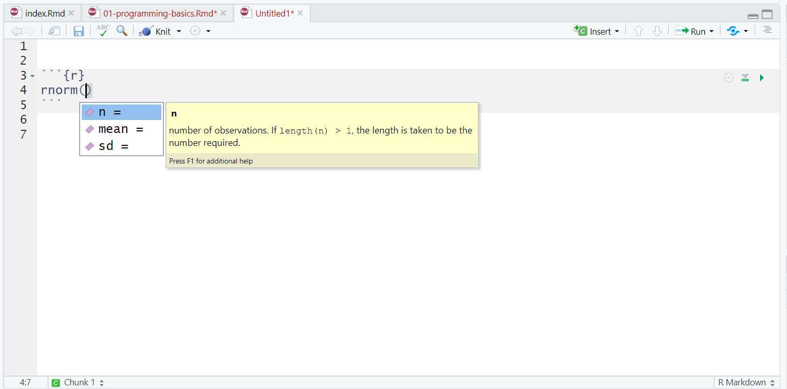

?rnormProgramlama
1 Fonksiyonlar
- Fonksiyon belli bir görevi yerine getirmek için yazılan bir grup komuttur.Bir fonksiyonun aldığı tüm argümanlara yardım dokümantasyonunu kullanarak
?functionformatını kullanarak bakabilirsiniz. Bazı argümanlar zorunlu, bazıları ise isteğe bağlıdır. İsteğe bağlı bağımsız değişkenler, herhangi bir değer girmezseniz genellikle varsayılan/olağan (normalde yardım belgelerinde belirtilen) bir değer kullanır.
rnorm()için yardım belgeleri sağ alt yardım panelinde görünmelidir. Kullanım bölümünde,rnorm()un aşağıdaki formu aldığını görüyoruz:
rnorm(n, mean = 0, sd = 1)Argümanlar bölümünde, her bir argüman için açıklamalar bulunmaktadır.
noluşturmak istediğimiz gözlem sayısı,meanoluşturacağımız veri noktalarının ortalaması vesdverinin standart sapmasıdır. Ayrıntılar bölümünde,meanvesdiçin herhangi bir değer girilmezse, bu değerler için varsayılan olarak 0 ve 1 kullanılacağı belirtilir.niçin varsayılan bir değer olmadığından, belirtilmesi gerekir, aksi takdirde kod çalışmaz.Bir örnek deneyelim ve R’den 5 rastgele sayı üretmesini istemek için gerekli
nargümanını değiştirelim.
set.seed(12042016)
rnorm(n = 5)
## [1] -0.2896163 -0.6428964 0.5829221 -0.3286728 -0.5110101- Bu sayıların ortalaması 0 ve SD’si 1’dir. Şimdi farklı bir sayı kümesi üretmek için ek argümanları değiştirebiliriz.
rnorm(n = 5, mean = 10, sd = 2)
## [1] 13.320853 9.377956 10.235461 9.811793 13.019102- Bu kez R yine 5 rastgele sayı üretti, ancak şimdi bu sayı kümesi belirtildiği gibi 10 ortalama ve 2 sd değerine sahip. Bir fonksiyonun hangi argümanları gerektirdiğini anlamanıza yardımcı olması için yardım belgelerini kullanmayı her zaman unutmayın.
Eğer internette kod örneklerine bakıyorsanız, sık sık set.seed() fonksiyonu ile başlayan kodlar görebilirsiniz. Bu fonksiyon rastgele sayı üretecini kontrol eder - rastgele sayı üreten herhangi bir fonksiyon kullanıyorsanız (rnorm() gibi), set.seed() fonksiyonunu çalıştırmak aynı sonucu almanızı sağlayacaktır (bazı durumlarda yapmak istediğiniz şey bu olmayabilir). Bu örnekte set.seed() diyoruz, bu aynı rastgele sayıları alacağınız anlamına geliyor.
1.1 Argüman isimleri
- Yukarıdaki örneklerde, kodumuzdaki bağımsız değişken adlarını yazdık (örneğin,
n,mean,sd), ancak bu kesinlikle gerekli değildir. Aşağıdaki iki kod satırının her ikisi de aynı sonucu üretecektir (rnorm()fonksiyonunu her çalıştırdığınızda rastgele olduğu için biraz farklı bir sayı kümesi üretecektir, ancak yine de aynı ortalama ve SD’ye sahip olacaklardır):
rnorm(n = 6, mean = 3, sd = 1)
rnorm(6, 3, 1)Önemli olarak, eğer argüman isimlerini yazmazsanız, R argümanların varsayılan sırasını kullanacaktır, yani
rnormiçin girdiğiniz ilk sayınınnolduğunu varsayacaktır. ikinci sayımeanve üçüncü sayısddir.Eğer argüman isimlerini yazarsanız, argümanları istediğiniz sırada yazabilirsiniz:
rnorm(sd = 1, n = 6, mean = 3)R’yi ilk öğrenirken, fonksiyonun her bir parçasının ne yaptığını hatırlamanıza ve anlamanıza yardımcı olabileceğinden, argüman adlarını yazmayı yararlı bulabilirsiniz. Ancak, becerileriniz ilerledikçe argüman adlarını atlamayı daha hızlı bulabilirsiniz ve ayrıca argüman adlarını kullanmayan çevrimiçi kod örnekleri göreceksiniz, bu nedenle her bir kod parçasının hangi argümana atıfta bulunduğunu anlayabilmek önemlidir (veya kontrol etmek için yardım belgelerine bakın).
Bu derste, her bir fonksiyonu ilk kez kullandığımızda argüman adlarını her zaman yazacağız, ancak sonraki kullanımlarda bunlar atlanabilir.
1.2 TAB ile otomatik tamamlama
- R Studio’nun çok kullanışlı bir özelliği, fonksiyonlar için TAB otomatik tamamlama özelliğidir (bkz. Şekil @ref(fig:img-autocomplete)). Fonksiyonun adını yazıp tab tuşuna basarsanız, R Studio size fonksiyonun aldığı argümanları kısa bir açıklama ile birlikte gösterecektir. Argüman adının üzerinde enter tuşuna basarsanız, tıpkı telefonunuzdaki otomatik tamamlama gibi adı sizin için dolduracaktır. Bu, R’yi ilk öğrenirken inanılmaz derecede kullanışlıdır ve bu özelliği sık sık kullanmayı unutmamalısınız.

1.3 Kişisel tanımlı fonksiyon
- Kişisel tanımlı fonksiyon yazılması şablonu aşağıdaki gibidir.
fonksiyonadi<- function(argumanlar ve olagan degerleri){
kodlar
return()
}- Oluşturulan fonksiyon çalıştırılırken ise aşağıdaki şeklinde çalıştırılır.
fonksiyonadi(argumanlar ve degerleri)- Kare alma işlemi aşağıdaki şekilde yapılabilir.
sayi <- 4
sayi * sayi
## [1] 16
sayi ^2
## [1] 16- Bu işlem sürekli yapılacaksa fonksiyon olarak yazılabilir.
# kare alma fonksiyonu
kare_al <- function(sayi){
return(sayi*sayi)
}
kare_al(4)
## [1] 16- Farklı dereceden üsler alabilen bir fonksiyon yazalım.
#üs alma
üs_al<- function(x,us){
return(x^us)
}
üs_al(3,4)
## [1] 81- Argümanlardan birine olağan değer girilmesi
#üs alma
üs_al<- function(x,us=2){
return(x^us)
}
üs_al(3) # us argumanin olagan degeri olan
## [1] 9
# 2 olduğu için argumana
# deger girilmediginde kare alir.- Yazdığınız Fonksiyon içinde tanımlanan nesneler çalışma alanına kaydedilmezler.
- Fonksiyonlar da R nesnesidir.
ls()
## [1] "kare_al" "sayi" "üs_al"2 R Çalışma Alanı
çalışma alanı, nesnelerin ve bilgilerin kaydedildiği alandır.
ls()veobjects()fonksiyonları çalışma alanında kayıtlı nesneleri konsolda göstermektedir.ls()fonksiyonu ile nesneleri çağırma işlemi özelleştirilebilir. Belirli bir harf ile başlayan, belirli bir harf içeren nesneleri nasıl silebilirsiniz?ls.str()fonksiyonu ise hafızadaki nesneleri ayrıntıları ile göstermektedir.Çok fazla kod yazıyorsanız, enviroment (veya çalışma alanının) birçok nesne ile darmadağın olduğunu fark edebilirsiniz. Bu, hangi nesneye ihtiyacınız olduğunu bulmanızı zorlaştırabilir ve bu nedenle yanlış veri seti kullanma riskiyle karşı karşıya kalabilirsiniz. Yeni bir veri seti üzerinde çalışıyorsanız veya son sürümü elde etmeden önce çok sayıda farklı kod denediyseniz, yanlış nesneyi kullanmaktan kaçınmak için ortamı/çalışma alanını temizlemeyi unutmamak iyi bir uygulamadır. Bunu birkaç şekilde yapabilirsiniz.
Nesneleri tek tek kaldırmak için konsola
rm(nesne_adı)yazabilirsiniz. Önceki bölümde oluşturduğunuz nesnelerden birini kaldırmak için bunu şimdi deneyin.Ortamdaki tüm nesneleri temizlemek için konsolda
rm(list = ls())komutunu çalıştırın.Ortamdaki tüm nesneleri temizlemek için ortam bölmesindeki süpürge simgesine de tıklayabilirsiniz.
Konsolda yer alan işlemleri silmek için ise: CTRL + L (clear console) ya da süpürge işareti kullanılabilir.
3 R Çalışma Dizini
R yazılımı Start/Baslangic menusu üzerinden çalıştırıldığında çalışma dizini C:/Users/
/Documents Çalışma dizinini sorgulamak için kullanılacak olan fonksiyon
getwd()(get working directory)
Çalışma dizinini değiştirmek için kullanılacak olan fonksiyon
setwd()(set working directory)
Bu işlem Rstudio menusu “Session” sekmesinden ya da CTRL +Shift + H tuşları ile de yapılabilmektedir.
Çalışma dizininiz çalıştığınız klasor yapmak için
setwd(dirname(rstudioapi::getActiveDocumentContext()$path))
3.1 R’i Kapatma
Kaydet (Save) ya da CTLR + S
dosyadi.Ruzantısıyla kaydedilebilmektedir.Bu sayede tekrar kullanılabilmekte ya da başkaları ile kolaylıkla paylaşılabilmektedir.
Tüm programlar gibi “x” işareti ile ya da q() fonksiyonunu ile sonlandırılabilir.
R’dan çıkış yaparken, program çalışma alanının kaydedilip kaydedilmeyeceğini sormaktadır.
Eger R’in çalışma alanını kaydetmesini istenirse, R çalışma dizinine `.Rdata uzantılı bir dosya kaydeder.
Çalışma alanı kaydı için
save.image("dosyaadi")komutu da kullanılabilmektedir.R’dan çıkış yapmadan yapılan işlem durdurulmak istenirse, konsol bölümündeki “Stop” işareti veya Esc tuşları kullanılabilir.
3.2 R oturumları
- R’yi açıp kod yazmaya, paketleri yüklemeye ve nesneler oluşturmaya başladığınızda, bunu yeni bir oturumda yaparsınız. Çalışma alanını temizlemeye ek olarak, bazen yeni bir oturum başlatmak yararlı olabilir. Bu, bilgisayarınızda R’yi her başlattığınızda otomatik olarak gerçekleşir, ancak oturumlar sunucuda kalıcı olabilir. Kodunuzun çalışmadığını fark ederseniz ve nedenini bulamazsanız, yeni bir oturum başlatmaya değer olabilir. Bu, ortamı temizleyecek ve yüklü tüm paketleri ayıracaktır - bunu telefonunuzu yeniden başlatmak gibi düşünün.
4 Hata ayıklama ipuçları
Kodlamanın büyük bir kısmı kodunuzun neden çalışmadığını anlamaya çalışmaktır ve bu acemi ya da uzman olmanız fark etmeksizin geçerlidir.
Bu ders boyunca ilerlerken yaptığınız hataların ve bunları nasıl düzelttiğinizin kaydını tutmalısınız.
Her bölümde dikkat etmeniz gereken bir dizi yaygın hata sunacağız, ancak şüphesiz kendiniz de yeni hatalar yapacaksınız (ve düzelteceksiniz!).
Kullanmaya çalıştığınız fonksiyonlar için doğru paketleri yüklediniz mi? Çok yaygın bir hata, paketi yüklemek için kodu yazmaktır, örneğin
library(tidyverse)ancak daha sonra çalıştırmayı unutmaktır.Bir yazım hatası mı yaptınız? Unutmayın
dataileDATAaynı şey değildir vet.testilet_testaynı şey değildir.Bir paket çakışması mı var? Paket ve fonksiyonu
package::functionile belirtmeyi denediniz mi?Bu kesinlikle bir hata mı? R’deki tüm kırmızı metinler hata anlamına gelmez - bazen size sadece bilgi içeren bir mesaj verir.
5 Fonksiyonlar
En sık kullandığımız fonksiyonlar
| oluşturma | c(), rep(), seq(), numeric(), character(), factor(), logical(), matrix(), array(), data.frame(), list() |
| Kaydetme | save(), load() |
| okuma/yazma | read(),write() |
| dönüştürme | as.numeric(),as.character(),as.factor(),as.logical(), as.matrix(), as.array(), as.data.frame(), as.list() |
| isimlendirme | names(), clonames(), rownames() |
| indeksleme | [ i ] (vektör için), [ i, j] (matris ve data frame için), [ i, j, k, …] (dizi için), [ [ k ] ] (liste için) j, k, tam sayı, karakter ya da mantıksal ifade olabilir |
| birleştirme | c(), paste(), cbind(), rbind(), merge() |
| sıralama | order(), arrange() |
| tur | class(), length(), dim(), nrow(), ncol() ……… |
Fonksiyon yazmak, bir R programcısının temel faaliyetlerinden biridir. Sadece bir “kullanıcıdan” R için yeni fonksiyonlar yaratan bir geliştiriciye geçişin temel adımını temsil eder. Fonksiyonlar genellikle, belki de biraz farklı koşullar altında birçok kez yürütülmesi gereken bir dizi ifadeyi kapsüllemek için kullanılır. Fonksiyonlar ayrıca genellikle kodun başkalarıyla veya kamuyla paylaşılması gerektiğinde yazılır.
Bir fonksiyonun yazılması, bir geliştiricinin koda bir dizi parametre ile açıkça belirtilen bir arayüz oluşturmasına olanak tanır. Bu arayüz, potansiyel kullanıcılara kodun bir soyutlamasını sağlar. Bu soyutlama kullanıcıların hayatını kolaylaştırır çünkü onları kodun nasıl çalıştığına dair her ayrıntıyı bilmek zorunda bırakmaz. Buna ek olarak, bir arayüzün oluşturulması, geliştiricinin kullanıcıya kodun önemli veya en alakalı yönlerini iletmesine olanak tanır.
5.1 R’da Fonkisyonlar
R’deki fonksiyonlar “birinci sınıf nesnelerdir”, yani diğer R nesneleri gibi ele alınabilirler. Daha da önemlisi,
Fonksiyonlar diğer fonksiyonlara argüman olarak aktarılabilir. Bu,
lapply()vesapply()gibi çeşitli döngü fonksiyonları için çok kullanışlıdır.Fonksiyonlar iç içe geçebilir, böylece bir fonksiyonu başka bir fonksiyonun içinde tanımlayabilirsiniz
5.2 İlk fonksiyon
Fonksiyonlar function() kullanılarak tanımlanır ve diğer her şey gibi R nesneleri olarak saklanır. Özellikle, “function” sınıfının R nesneleridirler.
İşte hiçbir argüman almayan ve hiçbir şey yapmayan basit bir fonksiyon.
> f <- function() {
+ ## Bu boş bir fonksiyondur
+ }
> ## Fonksiyonların kendi sınıfları vardır
> class(f)
## [1] "function"
> ## Bu işlevi çalıştırın
> f()
## NULLÇok ilginç değil ama bu da bir başlangıç. Yapabileceğimiz bir sonraki şey, aslında önemsiz olmayan bir fonksiyon gövdesine sahip bir fonksiyon oluşturmaktır.
> f <- function() {
+ cat("Merhaba!\n")
+ }
> f()
## Merhaba!Temel bir fonksiyonun son unsuru fonksiyon argümanlarıdır. Bunlar, kullanıcıya belirtebileceğiniz ve kullanıcının açıkça ayarlayabileceği seçeneklerdir. Bu temel fonksiyon için, konsola kaç kez “Merhaba!” yazdırılacağını belirleyen bir argüman ekleyebiliriz.
> f <- function(num) {
+ for(i in seq_len(num)) {
+ cat("Merhaba!\n")
+ }
+ }
> f(3)
## Merhaba!
## Merhaba!
## Merhaba!Açıkçası, aynı etki için sadece cat("Merhaba!\n") üç kere kesip yapıştırabilirdik. Ama o zaman programlama yapmıyor olurduk. Ayrıca, kodunuzu bir başkasına vermeniz ve onu kodu istediği kadar kesip yapıştırmaya zorlamanız da iyi olmayacaktır:) “Merhaba!”.
Genel olarak, kendinizi çok fazla kesme ve yapıştırma yaparken bulursanız, bu genellikle bir fonksiyon yazmanız gerekebileceğine dair iyi bir işarettir.
R’da uzmanlaştıkça ve yapılan işler karmaşıklaştıkça fonksiyon yazma ihtiyacı duyulmaktadır. Fonksiyon yazma gereksinimi özellikle tekrarlı işlemler yapılması gerektiği durumda ortaya çıkmaktadır. Fonksiyon yazmak
pratiklik kazandırır (ekonomiktir)
Paylaşılmasını koylaştırır.
Tekrar kullanılabilirlik sağlar.
Tekrarlı işlemlerde hatalardan kurtulmanın yolu fonksiyon kullanmaktır. Fonksiyonlar, koşullu önermeler ve döngüler ile kullanılarak çok sayıda komut ile yapılabilecek olan işlemler tek bir komut satırı ile yapılabilir hale gelmektedir
Son olarak, yukarıdaki fonksiyon hiçbir şey döndürmez. Sadece konsola tekrar sayıda “Merhaba!” yazdırır ve sonra çıkar. Ancak bir fonksiyonun, belki de kodun başka bir bölümüne beslenebilecek bir şey döndürmesi genellikle yararlıdır.
Sıradaki fonksiyon konsola yazdırılan toplam karakter sayısını döndürür.
> f <- function(tekrar) {
+ Merhaba <- "Merhaba!\n"
+ for(i in seq_len(tekrar)) {
+ cat(Merhaba)
+ }
+ chars <- nchar(Merhaba) * tekrar
+ chars
+ }
> f(3)
## Merhaba!
## Merhaba!
## Merhaba!
## [1] 27Yukarıdaki fonksiyonda, fonksiyonun karakter sayısını döndürmesi için özel bir şey belirtmemiz gerekmedi. R’de, bir fonksiyonun geri dönüş değeri her zaman değerlendirilen en son ifadedir. Bu fonksiyonda değerlendirilen son ifade chars değişkeni olduğu için, fonksiyonun dönüş değeri de bu olur.
Bir fonksiyondan açık bir değer döndürmek için kullanılabilecek bir return() fonksiyonu olduğunu unutmayın, ancak nadiren kullanılır.
Son olarak, yukarıdaki fonksiyonda, kullanıcı tekrar argümanının değerini belirtmelidir. Eğer kullanıcı tarafından belirtilmezse, R bir hata verecektir.
> f()
## Error in f(): argument "tekrar" is missing, with no defaultBu davranışı tekrar argümanı için bir varsayılan değer belirleyerek değiştirebiliriz. Belirtmek isterseniz, herhangi bir fonksiyon argümanının varsayılan bir değeri olabilir. Bazen, argüman değerleri nadiren değiştirilir (özel durumlar hariç) ve bu argüman için bir varsayılan değer ayarlamak mantıklıdır. Bu, kullanıcıyı fonksiyon her çağrıldığında bu argümanın değerini belirtme zorunluluğundan kurtarır.
Örneğin, burada tekrar için varsayılan değeri 1 olarak ayarlayabiliriz, böylece fonksiyon tekrar argümanı açıkça belirtilmeden çağrılırsa, konsola bir kez “Merhaba!” yazdırır.
> # f <- function(tekrar = 1) {
> # Merhaba <- "Merhaba!\n"
> # for(i in seq_len(tekrar)) {
> # cat(Merhaba)
> # }
> # chars <- nchar(Merhaba) * tekrar
> # chars
> # }
> # f() ## 'tekrar' için varsayılan değeri kullan
> # f(2) ## Kullanıcı tarafından belirtilen değeri kullanFonksiyonun hala konsola yazdırılan karakter sayısını döndürdüğünü unutmayın.
Bu noktada, bir fonksiyon yazdık
fonksiyonunun
tekraradında ve varsayılan değeri 1 olan bir formal argümanı vardır. formal argümanlar fonksiyon tanımına dahil edilen argümanlardır.formals()fonksiyonu bir fonksiyonun tüm biçimsel argümanlarının bir listesini döndürür“Merhaba!” mesajını
tekrarargümanıyla belirtilen sayıda konsola yazdırır*konsola yazdırılan karakter sayısını döndürür
Fonksiyonlar, isteğe bağlı olarak varsayılan değerlere sahip olabilen isimli argümanlara sahiptir. Tüm fonksiyon argümanlarının adları olduğundan, bunlar adları kullanılarak belirtilebilir.
> # f(tekrar = 2)Bir fonksiyonun çok sayıda argümanı varsa ve hangi argümanın belirtildiği her zaman net olmayabilirse, bir argümanı adıyla belirtmek bazen yararlıdır. Burada, fonksiyonumuzun yalnızca bir argümanı vardır, bu nedenle herhangi bir karışıklık olmaz.
5.3 Argüman Eşleştirme
Bir R fonksiyonunu argümanlarla çağırmak çeşitli şekillerde yapılabilir. Bu ilk başta kafa karıştırıcı olabilir, ancak komut satırında etkileşimli çalışma yaparken gerçekten kullanışlıdır. R fonksiyonları argümanları konumsal olarak veya isme göre eşleştirilebilir. Konumsal eşleştirme, R’nin ilk değeri ilk argümana, ikinci değeri ikinci argümana vb. atadığı anlamına gelir. Yani aşağıdaki rnorm() çağrısında
> str(rnorm)
## function (n, mean = 0, sd = 1)
> mydata <- rnorm(100, 2, 1) ## Bazı veriler oluşturun100, n argümanına, 2 ortalama argümanına ve 1 sd argümanına atanır, hepsi de konum eşleştirmesi ile yapılır.
Aşağıdaki sd() fonksiyonu (bir sayı vektörünün ampirik standart sapmasını hesaplar) çağrılarının tümü eşdeğerdir. sd()fonksiyonunun iki argümanı olduğunu unutmayın: x sayı vektörünü gösterir ve na.rm eksik değerlerin kaldırılıp kaldırılmayacağını belirten bir mantıksaldır.
> ## Konumsal eşleşme ilk argüman, na.rm için varsayılan
> sd(mydata)
## [1] 1.107163
> ## 'x' argümanını isimle belirtin, varsayılan 'na.rm'
> sd(x = mydata)
## [1] 1.107163
> ## Her iki argümanı da adla belirtin
> sd(x = mydata, na.rm = FALSE)
## [1] 1.107163Fonksiyon argümanlarını isimle belirtirken, bunları hangi sırada belirttiğiniz önemli değildir. Aşağıdaki örnekte, fonksiyon tanımında tanımlanan ilk argüman x olmasına rağmen, önce na.rm argümanını, ardından x argümanını belirtiyoruz.
> ## Her iki argümanı da adla belirtin
> sd(na.rm = FALSE, x = mydata)
## [1] 1.107163Konumsal eşleştirme ile ada göre eşleştirmeyi karıştırabilirsiniz. Bir argüman isme göre eşleştirildiğinde, argüman listesinden “çıkarılır” ve kalan isimsiz argümanlar fonksiyon tanımında listelendikleri sırayla eşleştirilir.
> sd(na.rm = FALSE, mydata)
## [1] 1.107163Burada, mydata nesnesi x argümanına atanır, çünkü henüz belirtilmemiş tek argüman budur.
Aşağıda, bir veri kümesine doğrusal modeller uyduran lm() fonksiyonunun argüman listesi yer almaktadır.
> args(lm)
## function (formula, data, subset, weights, na.action, method = "qr",
## model = TRUE, x = FALSE, y = FALSE, qr = TRUE, singular.ok = TRUE,
## contrasts = NULL, offset, ...)
## NULLAşağıdaki iki kod satırı eşdeğerdir.
lm(data = mydata, y ~ x, model = FALSE, 1:100)
lm(y ~ x, mydata, 1:100, model = FALSE)Bu işlem güvenli olsa da, bazı karışıklıklara yol açabileceğinden, argümanların sırası ile çok fazla uğraşmanızı önermem.
Çoğu zaman, adlandırılmış argümanlar komut satırında uzun bir argüman listeniz olduğunda ve listenin sonuna yakın bir argüman dışında her şey için varsayılanları kullanmak istediğinizde kullanışlıdır. Adlandırılmış argümanlar, konumunu değil, argüman adını hatırlayabiliyorsanız da yardımcı olur. Örneğin, çizim fonksiyonları genellikle özelleştirmeye izin vermek için çok sayıda seçeneğe sahiptir, ancak bu, argüman listesindeki her argümanın konumunu tam olarak hatırlamayı zorlaştırır.
Varsayılan bir değer belirtmemenin yanı sıra, bir argümanın değerini NULL olarak da ayarlayabilirsiniz.
f <- function(a, b = 1, c = 2, d = NULL) {
}Bir R nesnesinin NULL olup olmadığını is.null() fonksiyonu ile kontrol edebilirsiniz. Bazen bir argümanın NULL değerini almasına izin vermek yararlıdır, bu da fonksiyonun belirli bir işlem yapması gerektiğini gösterebilir.
Kullanışlı bir fonksiyon yazmak için mümkün olduğunca kısa isimler kullanılmalıdır; bununla birlikte bu isimler kullanıcıya yapılacak işlemi anlaşılırkılmalıdır. Bunun yanında R’da özel anlamı olan c,C,D,F,I,q,t,T gibi tek harfl ik fonksiyon isimleri kullanmaktan ve R’da hazır olan fonksiyon isimlerini kişisel tanımlı fonksiyonlara vermekten kaçınılmalıdır.
5.4 ... argümanı
R’de ... argümanı olarak bilinen ve genellikle diğer fonksiyonlara aktarılan değişken sayıda argümanı gösteren özel bir argüman vardır. ... argümanı genellikle başka bir fonksiyonu genişletirken kullanılır ve orijinal fonksiyonun tüm argüman listesini kopyalamak istemezsiniz
Örneğin, özel bir çizim fonksiyonu varsayılan plot() fonksiyonunu tüm argüman listesiyle birlikte kullanmak isteyebilir. Aşağıdaki fonksiyon type argümanı için varsayılanı type = "l" değerine değiştirir (orijinal varsayılan type = "p" idi).
myplot <- function(x, y, type = "l", ...) {
plot(x, y, type = type, ...) ## '...'yi 'plot' işlevine geçirin
}Jenerik fonksiyonlar, metotlara ekstra argümanlar aktarılabilmesi için ... kullanır.
> mean
## function (x, ...)
## UseMethod("mean")
## <bytecode: 0x000001e18fab5428>
## <environment: namespace:base>Fonksiyona aktarılan argüman sayısı önceden bilinemediğinde ... argümanı gereklidir. Bu durum paste() ve cat() gibi fonksiyonlarda açıkça görülmektedir.
> args(paste)
## function (..., sep = " ", collapse = NULL, recycle0 = FALSE)
## NULL
> args(cat)
## function (..., file = "", sep = " ", fill = FALSE, labels = NULL,
## append = FALSE)
## NULLHem paste() hem de cat() birden fazla karakter vektörünü bir araya getirerek konsola metin yazdırdığından, bu fonksiyonların kullanıcı tarafından fonksiyona kaç karakter vektörü aktarılacağını önceden bilmesi imkansızdır. Bu yüzden her iki fonksiyonun da ilk argümanı ... şeklindedir.
5.5 ... argümanından sonra gelen argümanlar
... ile ilgili bir sorun, argüman listesinde after... olarak görünen herhangi bir argümanın açıkça adlandırılması gerektiği ve kısmen eşleştirilemeyeceği veya konum olarak eşleştirilemeyeceğidir.
paste() fonksiyonunun argümanlarına bir göz atın.
> args(paste)
## function (..., sep = " ", collapse = NULL, recycle0 = FALSE)
## NULLpaste() fonksiyonu ile,sepvecollapse argümanları, varsayılan değerler kullanılmayacaksa, açıkça ve tam olarak adlandırılmalıdır.
Burada “a” ve “b”nin birlikte yapıştırılmasını ve iki nokta üst üste ile ayrılmasını istediğimi belirtiyorum.
> paste("a", "b", sep = ":")
## [1] "a:b"Eğer sep argümanını tam olarak belirtmezsem ve kısmi eşleştirmeye güvenmeye çalışırsam, beklenen sonucu alamıyorum.
> paste("a", "b", se = ":")
## [1] "a b :"5.6 Yazım Aşamaları
Fonksiyon yazmak kadar iyi bir fonksiyon yazmak da önemlidir. İyi bir fonksiyonun ilk özelliği doğru sonucu veriyor olmasıdır.
Bunu sağlayabilmek için fonksiyon yazmadan önce problemi iyi tanımlamak ve problemin çözümünü komut satırları ile yazmak daha sonra bunu fonksiyona dönüştürmek gereklidir.
Bir fonksiyonun doğru sonucu vermesi kadar diğer kullanıcılar tarafından anlaşılır olması da önemlidir.
- Önce bir taslak oluşturun.
- Taslağınızı içine komut satırlarınıza yapıştırın
- Fonksiyonun argümanları belirleyin
- Argüman isimlerinizi kullanacağınız değişkenlerle değiştirin
5.7 Çoklu veri seti oluşturma ve dışarı aktarma
- İstenilen sayıda veri seti oluşturan bir fonksiyon yazalım. Fonksiyonun ilk girdisi veri seti sayısı olmalı, varsayılan olarak bir veri seti oluşturalan fonksiyon taslağı oluşturalım.
fonksiyon_adi <- function(sayi=1){
}- Kullanıcı oluşturmak istediği her bir veri seti için satır ve sütun sayısını belirleyebilirsin. Satır ve sütun sayısını argüman olarak tanımlayalım. Örneğin oluşturduğu ilk veri setin 5 satır, 10 sütunlu ikincisi olsun. Bunun için argümana varsayilan değerler atayalım
fonksiyon_adi <- function(sayi=1,satir=c(5),sutun=c(10)){
}- Oluşturacak olan her bir veri setinin her bir sütunu standart normal dağılıma uygun olacak şekilde üretilsin. Oluşturulan veri setlerinden ilki “veri_1.xlsx” şeklinde çalışma alanına yazdırılsın
> fonksiyon_adi <- function(sayi=1,satir=c(5),sutun=c(10)){
+
+ df <- data.frame(matrix(0,nrow=satir, ncol=sutun))
+ writexl::write_xlsx(df,"veri_1.xlsx")
+ }
> fonksiyon_adi(sayi=1,satir=c(5),sutun=c(10))
> 1. Geometrik ortalamanın farklı hesaplama yolları bulunmaktadır.
Geometrik ortalama, bir veri setindeki sayıların çarpımlarının, sayıların toplam sayısı kadar kökünün alınmasıyla hesaplanan bir ortalamadır. Genellikle büyüme oranlarının veya orantılı verilerin ortalamasını hesaplamak için kullanılır.
Matematiksel formül: \[ \text{Geometrik Ortalama} = \sqrt[n]{x_1 \cdot x_2 \cdot \dots \cdot x_n} \]
Değerlerinin çarpımı çok büyük olduğunda taşma hatalarını önlemek için logaritma değerlerine dayalı olarak hesaplanır. Logaritma değerlerine dayalı olarak hesaplandığında, geometrik ortalama, gözlem değerlerinin logaritmalarının aritmetik ortalamasıdır. Logaritmik yöntemin matematiksel formülü:
\[ \text{Geometrik Ortalama} = \exp\left(\frac{1}{n} \sum_{i=1}^n \ln(x_i)\right) \]
Bir x vektorunun geometrik ortalamasını her iki formüle göre de hesaplayan bir fonksiyon yazınız, yazdığınız fonksiyon her iki değeri de yazdırısın. Ayrıca psych paketinden geometric.mean() fonksiyonu ile sonuçlarınızı karşılaştırınız. x <- 200:250 gibi bir vektörde deneyebilirsiz.
> # psych paketinin yüklü olduğundan emin olun
> # install.packages("psych")
> library(psych)
## Warning: package 'psych' was built under R version 4.4.3
>
> hesapla_geometrik_ortalama_v2 <- function(x) {
+ # Pozitiflik kontrolü
+ if (any(x <= 0)) {
+ stop("Geometrik ortalama hesaplanacak tüm değerler pozitif olmalıdır.")
+ }
+
+ n <- length(x) # Gözlem sayısı
+
+ # 1. Doğrudan Çarpım Yöntemi (Kısa formül)
+ g_mean_carpim <- prod(x)^(1/n)
+
+ # 2. Logaritmik Yöntem (Kısa formül)
+ g_mean_log <- exp(mean(log(x)))
+
+ # 3. psych::geometric.mean()
+ g_mean_psych <- psych::geometric.mean(x)
+
+ # Sonuçları düzenli bir veri çerçevesi olarak oluşturma
+ sonuclar <- data.frame(
+ Yontem = c("Doğrudan Çarpım", "Logaritmik", "psych::geometric.mean()"),
+ Geometrik_Ortalama = c(g_mean_carpim, g_mean_log, g_mean_psych),
+ row.names = NULL
+ )
+
+ # Sonuçları yazdırma (Veri çerçevesi formatında)
+ cat("--- Geometrik Ortalama Hesaplama Sonuçları (n =", n, ") ---\n")
+ print(sonuclar)
+ cat("-----------------------------------------------------------\n")
+
+ # Veri çerçevesini görünmez (invisible) olarak döndürme
+ return(invisible(sonuclar))
+ }
>
> # --- Deneme ---
> x_test <- 200:250
> hesapla_geometrik_ortalama_v2(x_test)
## --- Geometrik Ortalama Hesaplama Sonuçları (n = 51 ) ---
## Yontem Geometrik_Ortalama
## 1 Doğrudan Çarpım 224.5172
## 2 Logaritmik 224.5172
## 3 psych::geometric.mean() 224.5172
## -----------------------------------------------------------5.7.1 Sıra Sizde
Çoklu dosya yazımı için oluştruduğumuz fonksiyonu, fonksiyon haline getirmeden önce getirmeden önce aşama aşama aşağıdaki işlemleri yapabilirsiniz.
for döngüsü ile boş bir veri setinin sütunlarını farklı şekillerde oluşarabilirsiniz. Örneğin üç sütunu kategorik değişken, dört sütunu sürekli değişken olarak oluşturabilirsiniz.
for döngüsü ile liste kullanımı anlamak için tüm verileri 0 olan farklı boyutlarda verisetleri oluşturup bu veri setlerini çalışma alanınız yazdırabilirsiniz.
for döngüsü ile liste kullanımı anlamak için PISA veri setinden farklı boyutlarda verisetleri çekip bu veri setlerini çalışma alanınız yazdırabilirsiniz.
for döngüsü ile çalışma alanlarınızdaki veri setlerini okuyup, her bir bir seti için özet bilgileri bir listede saklayabilirsiniz.
ve daha pek çok şey deneyebilirsiniz. iyi kodlamalar
Şimdi ise bu fonksiyonu çoklu dosya yazımına uygun hale getirelim
> fonksiyon_adi <-function(sayi=3,satir=c(5,5,5),sutun=c(10,10,10)){
+
+ df_list <- list() ## her bir veri setinin atanacağı yeni nesne
+
+ for( i in 1:sayi){
+ df_list[[i]] <- data.frame(matrix(0,nrow=satir[i], ncol=sutun[i])) # veri seti istenilen ozelliklerde olusturulur
+ for(j in 1:sutun[i]){
+ df_list[[i]][,j] <- round(rnorm(satir[i],0,1),2) # her bir veri setinin her bir sütunu standart normal dağılıma uygun uretilir
+ writexl::write_xlsx(df_list[[i]],paste("veri",i,".xlsx", sep=""))
+
+ }}
+
+ }
> fonksiyon_adi(sayi=5,satir=c(5,4,3,5,5),
+ sutun=c(10,5,4,3,4))
> 5.8 Özet
Fonksiyonlar
function()fonksiyonu kullanılarak tanımlanabilir ve diğer R nesneleri gibi R nesnelerine atanırFonksiyonlar adlandırılmış argümanlarla tanımlanabilir; bu fonksiyon argümanlarının varsayılan değerleri olabilir
Fonksiyon argümanları isme göre veya argüman listesindeki konuma göre belirtilebilir
Fonksiyonlar her zaman fonkisyon gövdesinde değerlendirilen son ifadeyi döndürür
Bir fonksiyon tanımında özel
...argümanı kullanılarak değişken sayıda argüman belirtilebilir.
6 Kontrol yapıları
R’deki kontrol yapıları, bir dizi R ifadesinin yürütme akışını kontrol etmenize olanak tanır. Temel olarak kontrol yapıları, her z
’deki kontrol yapıları, bir dizi R ifadesinin yürütme akışını kontrol etmenize olanak tanır. Temel olarak kontrol yapıları, her zaman aynı R kodunu çalıştırmak yerine kod satırlarında mantığımızı kullanmamızı sağlar.
Kontrol yapıları, girdilere veya verilerin özelliklerine yanıt vermenize ve buna göre farklı R ifadeleri yürütmenize olanak tanır.
Yaygın olarak kullanılan kontrol yapıları:
ifveelse: bir koşulu test etmek ve ona göre hareket etmekfor: bir döngüyü sabit sayıda çalıştırmawhile: bir koşul doğru iken bir döngü yürütmekrepeat: sonsuz bir döngü yürütmek (durdurmak içinbreakgerekir)break: bir döngünün yürütülmesini kesernext: bir döngü arasını atlama
Çoğu kontrol yapısı etkileşimli oturumlarda değil, daha ziyade fonksiyonlar veya daha uzun ifadeler yazarken kullanılır. Ancak, bu yapılar fonksiyonlarda kullanılmak zorunda değildir ve progralama öğrenmek için bu yapılara aşina olmak gereklidir.
Döngüler diğer bütün programa dillerinde sıklıkla kullanılan akış kontrolü (flow control) mekanizmasının bir parçasıdır.
Her ne kadar R vektörel elementler üzerine kurulmuş olsa da bazı durumlarda döngülerin kullanılması gerekebilir.
Örneğin, simulasyon çalışmaları genellikle iterasyonel ve tekrar eden süreçleri içermektedir.
Döngüler sonuç elde etmek yerine süreçteki işlemleri dikkate aldığından, simulasyon çalışmalarında kullanılır.
for() döngüsü ile belirlenen sayıda işlem tekrarı yapılırken while() ya da repeat() döngülerinde bir sayaç ya da bir dizin ile kontrol sağlanarak işlemlerin tekrarlı yapılmasını sağlar.
for() bir vektör, liste ya da matris içindeki her bir elemanın bir değişken yardımıyla belirlenen komutu veya kodu sırasıyla yapması için oluşturulan bir döngüdür.
6.1 if-else
if-else kombinasyonu muhtemelen R’de (veya belki de herhangi bir dilde) en sık kullanılan kontrol yapısıdır. Bu yapı, bir koşulu test etmenize ve doğru ya da yanlış olmasına bağlı olarak ona göre hareket etmenize olanak tanır.
Öncelilke if koşullu ifadesinin kullanımını gösterelim:
> if(<koşul>) {
> ## kodlar
> }
## Error in parse(text = input): <text>:1:4: unexpected '<'
## 1: if(<
## ^Yukarıdaki kod, koşul yanlışsa hiçbir şey yapmaz. Koşul yanlış olduğunda yürütmek istediğiniz bir eyleminiz varsa, o zaman bir else cümlesine ihtiyacınız vardır.
> if(<koşul>) {
> ## kodlar
> }else {
> ## kodlar
> }
## Error in parse(text = input): <text>:1:4: unexpected '<'
## 1: if(<
## ^ifi herhangi bir if ile takip ederek bir dizi test yapabilirsiniz. else if kullanabilirsiniz.
> if(<kosul1>) {
> ## kodlar
> } else if(<kosul2>) {
> ## kodlar
> } else {
> ## kodlar
> }
## Error in parse(text = input): <text>:1:4: unexpected '<'
## 1: if(<
## ^İşte geçerli bir if/else yapısına bir örnek.
## bir rastgele sayı oluşturun
set.seed(41)
x <- runif(1, 0, 10)
if(x > 3) {
y <- 10
} else {
y <- 0
}
x;y
## [1] 2.134905
## [1] 0y değeri x > 3 olup olmamasına bağlı olarak ayarlanır. Bu ifade eşdeğer bir şekilde de yazılabilir.
y <- if(x > 3) {
10
} else {
0
}Bu ifadeyi yazmanın hiçbir yolu diğerinden daha doğru değildir. Hangisini kullanacağınız sizin tercihlerinize bağlıdır.
Elbette else cümlesi gerekli değildir. Kendi koşulları doğruysa her zaman çalıştırılan bir dizi if cümlesi de oluşturabilirsiniz.
> if(<kosul1>) {
>
> }
>
> if(<kosul2>) {
>
> }
## Error in parse(text = input): <text>:1:4: unexpected '<'
## 1: if(<
## ^6.1.1 Örnekler
Ölçme açısından bakılacak olursa koşul bir ölçütü, durum cümlesi ise değerlendirmeyi gösterilebilir. Örneğin, yapılan bir sınavda geçme notu 60 olarak belirlendiğinde, 75 alan bir öğrencinin durumu aşağıdaki if() durum cümlesiyle belirlenebilmektedir.
> x <-75
> if(x>=65){
+ print("Basarılı")
+ }
## [1] "Basarılı"Ancak kontrol durumu çoğunlukla tek önermeye bağlı değildir.
- Aşağıdaki kod çıktı vermeyecektir
> x <-60
> if(x>=65){
+ print("Basarılı")
+ }- else kullanımı ile çıktı alabiliriz
> x <-60
> # Başarılı Durum
> if(x>=65){
+ print("Basarılı")
+ }else{
+ print("Basarisiz")
+ }
## [1] "Basarisiz"Koşul her zaman iki kategori ile tanımlanamayabilir. Bu durumda kullanımı else if() ile destekleyebiliriz
>
> x <- 75 # Başarılı Durum
> if(x>=90){
+ print("AA")
+ }else if(x>=80){
+ print("BA")
+ }else if(x>=70){
+ print("BB")
+ }else if(x>=65){
+ print("CB")
+ }else if(x>=60){
+ print("CC")
+ }else if(x>=50){
+ print("DD")
+ }else if(x>=30){
+ print("FD")
+ }else{
+ print("FF")
+ }
## [1] "BB"6.1.2 Sıra sizde
- a sayısının çarpmaya göre tersi 1/a’dir. Ancak bu durum 0 için tanımsızdır.
if()durum cümlesi kullanarak bu durumu kodlayınız. x <- 5 ve x<-0 için için test ediniz.
## [1] "5'in carpmaya gore tersi 1/5"x <- 0 için test ediniz.
## [1] "1/0 tanımsızdır."- -2 ile 2 arasında sayılar üretip, bunu x değişkenine atayalım.
> x <- rnorm(1)
> x
## [1] 1.899161Random olarak üretilen sayının 1’den büyük olması durumunda çıktı “1’den büyük” -1 ile 1 arasında olması durumunda “-1 ile +1 arasında” -1’den küçük olması durumunda ise “-1’den küçük” çıktısı versin.
## [1] -1.071021
## [1] "sayı -1'den küçük"6.2 if() & all()
Her ne kadar if() önermesi bir elemanlı vektörlerde çıktı verse de if() önermesi içinde kullanılabilen all fonkisyonu ile vektörün tüm elemanları için koşul testi yapabilir.
> x <- c(1,2,-3,4)
> if(all(x>0)){
+
+ print("tum sayilar 0'dan buyuktur")
+
+ } else{
+
+ print("tum sayilar 0'dan buyuk degildir")
+ }
## [1] "tum sayilar 0'dan buyuk degildir"6.3 if() & any()
Bir vektörde içinde yer alan her hangi bir elemana dair test ise if() fonksiyonu içinde any() fonksiyonu ile sağlanabilir.
> x <- c(1,2,-3,4)
> if(any(x<0)){
+
+ print("nesne en az bir negatif sayi icerir")
+
+ } else{
+
+ print("nesne negatif sayi icermez")
+ }
## [1] "nesne en az bir negatif sayi icerir"6.4 if() çoklu islem
> x <- 2
> if(x == 2) {
+
+ goster3 <- "Dogru"
+ goster3b <- c(1,2,3)
+ goster3c <- sample(1:1000,4)
+ } else {
+
+ goster3 <- "Yanlis"
+ goster3b <- c(3,2,1)
+ goster3c <- 10000 + sample(1:1000,4)
+
+ }
>
> goster3
## [1] "Dogru"
> goster3b
## [1] 1 2 3
> goster3c
## [1] 584 698 413 3266.5 ifelse()
ifelse() durum cümlesi, if() durum cümlelerinde vektörlerin kullanımından kaynaklı sıkıntılara çözüm sunar. Bu bakımdan ifelse(), if() durum cümlelerinin vektörler için kullanılabilir halidir.
ifelse() durum cümlesinin genel kullanımı aşağıdaki gibidir.
ifelse(koşul, Doğru İfade, Yanlış İfade)
> x <- 20
> ifelse(x>= 65, "Başarılı" ,"Başarısız")
## [1] "Başarısız"ifelse() eksik veri atamak için de kullanılabilir. Eksik verinin 99 ile gösterildiği bir vektörde eksik veri yerine NA atama örneği
> (x <- c(1,2,3,4,99,5))
## [1] 1 2 3 4 99 5
> ifelse(x==99, NA, x)
## [1] 1 2 3 4 NA 56.5.1 Sıra Sizde
- Elimizdeki bir nesnede yer alan sayıların tek ya da çift olduğunu yazdırma
> set.seed(41)
> sayilar <- sample(50:90,27)
> sayilar
## [1] 89 84 54 81 57 78 55 71 80 62 87 67 70 83 82 61 66 53 50 69 79 64 85 51 73
## [26] 74 88## [1] "Tek Sayi" "Cift Sayi" "Cift Sayi" "Tek Sayi" "Tek Sayi" "Cift Sayi"
## [7] "Tek Sayi" "Tek Sayi" "Cift Sayi" "Cift Sayi" "Tek Sayi" "Tek Sayi"
## [13] "Cift Sayi" "Tek Sayi" "Cift Sayi" "Tek Sayi" "Cift Sayi" "Tek Sayi"
## [19] "Cift Sayi" "Tek Sayi" "Tek Sayi" "Cift Sayi" "Tek Sayi" "Tek Sayi"
## [25] "Tek Sayi" "Cift Sayi" "Cift Sayi"- Elimizdeki bir nesnede yer alan sayıların 0, pozitif veya negatif oldugu belirleme
> set.seed(987)
> sayilar <- sample(-10:10,27,replace=TRUE)
> sayilar
## [1] 4 3 4 2 1 7 -10 5 6 -8 7 -3 9 7 -9 10 4 -1 -8
## [20] 8 -3 0 4 5 8 1 3## [1] "Pozitif" "Pozitif" "Pozitif" "Pozitif" "Pozitif" "Pozitif" "Negatif"
## [8] "Pozitif" "Pozitif" "Negatif" "Pozitif" "Negatif" "Pozitif" "Pozitif"
## [15] "Negatif" "Pozitif" "Pozitif" "Negatif" "Negatif" "Pozitif" "Negatif"
## [22] "Sıfır" "Pozitif" "Pozitif" "Pozitif" "Pozitif" "Pozitif"- Finalden 50 ve üzeri alan ve en az 11 derse devam edem öğrencilerin geçme notları finalin %60 ve vizenin %40 alınarak hesaplansın, 11’den az derse devam eden öğrencilerin geçme notu final notunun %60’ olarak alınsın.
> vize <- c(60,70,80,90,55)
> final <- c(45,65,70,50,80)
> devam <- c(14,10,13,12,11)6.6 for
Zaman zaman diğer döngü türlerine ihtiyaç duysanız da, for döngüsünün yeterli olmadığı nadir durum vardır. R’de for döngüleri bir ara değişken alır ve ona bir dizi ya da vektörden ardışık değerler atar. For döngüleri en yaygın olarak bir nesnenin (liste, vektör, vb.) elemanları üzerinde yineleme yapmak için kullanılır.
> for(i in 1:10) {
+ print(i)
+ }
## [1] 1
## [1] 2
## [1] 3
## [1] 4
## [1] 5
## [1] 6
## [1] 7
## [1] 8
## [1] 9
## [1] 10Bu döngü i değişkenini alır ve döngünün her iterasyonunda ona 1, 2, 3, …, 10 değerlerini verir, küme parantezleri içindeki kodu çalıştırır ve ardından döngüden çıkar.
Aşağıdaki üç döngünün hepsi aynı davranışa sahiptir.
> x <- c("a", "b", "c", "d")
>
> for(i in 1:4) {
+ ## 'x'in her bir öğesini yazdırır
+ print(x[i])
+ }
## [1] "a"
## [1] "b"
## [1] "c"
## [1] "d"seq_along() fonksiyonu genellikle bir nesnenin (bu durumda x nesnesi) uzunluğuna bağlı olarak bir tamsayı dizisi oluşturmak için for döngüleriyle birlikte kullanılır.
> ## 'x' uzunluğuna göre bir dizi oluşturun
> for(i in seq_along(x)) {
+ print(x[i])
+ }
## [1] "a"
## [1] "b"
## [1] "c"
## [1] "d"İndeks değişken kullanmak gerekli değildir.
> for(letter in x) {
+ print(letter)
+ }
## [1] "a"
## [1] "b"
## [1] "c"
## [1] "d"Bir satırlık döngüler için, küme parantezleri kesinlikle gerekli değildir.
> for(i in 1:4) print(x[i])
## [1] "a"
## [1] "b"
## [1] "c"
## [1] "d"Bununla birlikte, tek satırlık döngüler için bile küme parantezleri kullanmayı seviyorum, çünkü bu şekilde döngüyü birden fazla satıra genişletmeye karar verirseniz, küme parantezleri eklemeyi unuttuğunuz için hata almazsınız.
> for(i in 1:10) {
+ print(i)
+ }
## [1] 1
## [1] 2
## [1] 3
## [1] 4
## [1] 5
## [1] 6
## [1] 7
## [1] 8
## [1] 9
## [1] 10- Döngüde indeks değişkeni herhangi bir nesne ile tanımlanabilir. Örneğin i, ayrıca indeks değerinin başlangıcı 1 olmak zorunda değildir.
> for(i in 5:8) {
+ print(i)
+ }
## [1] 5
## [1] 6
## [1] 7
## [1] 8- karakter yazımında indeks i sadece tekrar amaçlı kullanılır.
> for(i in 5:10){
+ print("Merhaba")
+ }
## [1] "Merhaba"
## [1] "Merhaba"
## [1] "Merhaba"
## [1] "Merhaba"
## [1] "Merhaba"
## [1] "Merhaba"6.6.1 Sıra Sizde
- Aşağıdaki çıktıyı sağlayacak kodu yazınız.
## 1 + 1 = 2
## 2 + 2 = 4
## 3 + 3 = 6
## 4 + 4 = 8
## 5 + 5 = 10
## 6 + 6 = 12
## 7 + 7 = 14
## 8 + 8 = 16
## 9 + 9 = 18
## 10 + 10 = 20Döngüdelerde bir degişken yeniden tanımlanacak ise mutlaka döngü öncesi o değişken tanımlanmalıdır.
Oluşturulan bir matrisin satırlarında yer alan sayıların toplamını başka bir nesneye atama
> (X <- cbind(a = 1:5, b=2:6))
## a b
## [1,] 1 2
## [2,] 2 3
## [3,] 3 4
## [4,] 4 5
## [5,] 5 6
> Y <- array()
> for(i in 1:nrow(X)) {
+ Y[i] <- X[i,1] + X[i,2]
+ }
> Y
## [1] 3 5 7 9 11cat(),paste()gibi fonksiyonları uzun bir döngüde, döngünün durumunu görmek için de kullanabilirsiniz .
> islem.kontrol <- array()
> for(i in 1:10){
+ islem.kontrol[i] <- paste("Islem ", i, " tamamlandi", sep="")
+ }
> islem.kontrol
## [1] "Islem 1 tamamlandi" "Islem 2 tamamlandi" "Islem 3 tamamlandi"
## [4] "Islem 4 tamamlandi" "Islem 5 tamamlandi" "Islem 6 tamamlandi"
## [7] "Islem 7 tamamlandi" "Islem 8 tamamlandi" "Islem 9 tamamlandi"
## [10] "Islem 10 tamamlandi"- Döngülerde her zaman
iindeksini kullanmak zorunda değiliz.
> set.seed(10)
> x <- sample(1:10000,100)
>
> sayac <- 0
> for (val in x) {
+ if(val %% 2 == 0){
+ sayac = sayac+1
+ }
+ }
> print(sayac)
## [1] 466.7 for() Döngüsü ve Kontrol
Her zaman işlemi tüm elemanlara uygulamak istemeyebiliriz. Bunu önlemek icin akış kontrolü yapmak gerekir.
Kontrol mantıksal operatörlerle ya da koşul cümleleri ile sağlanabilir.
> for(i in 1:3){
+ if (i==2) cat("indeks cift sayidir:","\n")
+ else cat(i,"\n")
+ }
## 1
## indeks cift sayidir:
## 3> for(i in 1:3){
+ if (i==2) {
+ cat("indeks degeri ikidir:",i,"\n")
+ }else{cat("indeks degeri iki degildir","\n")}
+ }
## indeks degeri iki degildir
## indeks degeri ikidir: 2
## indeks degeri iki degildirDöngünün indeksi her zaman bir tam sayı olmak zorunda değildir. Liste, veri seti, matris de olabilir.
if sadece numerik değer ve vektörlerle çalışmaz. Aynı zamanda veri seti, matris ve listelerle de çalışabilir.
> d <- data.frame(a = 1:5, b=2:6)
> d> for(x in d) {
+ cat("sutun toplamlari:", sum(x), "\n")
+ }
## sutun toplamlari: 15
## sutun toplamlari: 20> X <- cbind(1:5, 21:25)
> X
## [,1] [,2]
## [1,] 1 21
## [2,] 2 22
## [3,] 3 23
## [4,] 4 24
## [5,] 5 256.7.1 Sıra Sizde
X matrisini kullanarak aşağıdaki çıktıyı elde etmek için gerekli kodu yazınız.
## 1 satirdaki degerlerin carpimi 21 olarak hesaplanmistir.
## 2 satirdaki degerlerin carpimi 44 olarak hesaplanmistir.
## 3 satirdaki degerlerin carpimi 69 olarak hesaplanmistir.
## 4 satirdaki degerlerin carpimi 96 olarak hesaplanmistir.
## 5 satirdaki degerlerin carpimi 125 olarak hesaplanmistir.6.8 next() ve break()
next()vebreak()fonksiyonları döngülerde kontrol mekanizmasıdır. Döngüyü sadece belirli bir koşulda çalıştırmak istemezseniznext()fonksiyonunu kullanabilirsiniz.
> for(i in 1:6){
+ if(i==3){
+ next
+ }
+ print (i)}
## [1] 1
## [1] 2
## [1] 4
## [1] 5
## [1] 6- Döngüyü sadece belirli bir koşulda durdurmak isterseniz
break()fonksiyonunu kullanabilirsiniz.
> for(i in 1:12){
+ if(i==3){
+ break
+ }
+ print (i)}
## [1] 1
## [1] 2- Döngüler uzun zamanda çalışır. ilk olarak büyük bir matris oluşturalım
> set.seed(853)
> y<-matrix(rnorm(1000000),nrow=1000)
> z<-0*y
> - işlemi döngü ile yapalım.
> #loop:
> time2 <- system.time(
+ for(i in 1:1000){
+ for(j in 1:1000){
+ z[i,j]<-y[i,j]^2
+ }
+ })
>
> time2
## user system elapsed
## 0.09 0.00 0.11- ayni islemi dongusuz yapma
> time3 <- system.time(z<-y^2)
> time3
## user system elapsed
## 0.01 0.00 0.006.9 İçiçe for döngüleri
for döngüler birbirinin içinde yuvalanabilir.
> x <- matrix(1:6, 2, 3)
>
> for(i in seq_len(nrow(x))) {
+ for(j in seq_len(ncol(x))) {
+ print(x[i, j])
+ }
+ }
## [1] 1
## [1] 3
## [1] 5
## [1] 2
## [1] 4
## [1] 6İç içe döngüler genellikle çok boyutlu veya hiyerarşik veri yapıları (örn. matrisler, listeler) için gereklidir. Yine de iç içe geçme konusunda dikkatli olun. 2-3 seviyeden fazla iç içe geçme genellikle kodun okunmasını/anlaşılmasını zorlaştırır. Çok sayıda iç içe döngüye ihtiyaç duyuyorsanız, fonksiyonları kullanarak döngüleri parçalamak isteyebilirsiniz (daha sonra tartışılacaktır).
6.9.1 sıra sizde
- Bazen döngüler iç içe kullanılabilir 5X5 bir matrisin her bir elemanı satır ve sütun indeksleri çarpımı olsun orneğin 2. satır 5. sütun elemanı 2*5=10 olsun. Bu işlemi yapmak için öncelikle boş bir matris oluştumak lazım.
> m2 <- matrix(0,nrow=5,ncol=5)
> m2
## [,1] [,2] [,3] [,4] [,5]
## [1,] 0 0 0 0 0
## [2,] 0 0 0 0 0
## [3,] 0 0 0 0 0
## [4,] 0 0 0 0 0
## [5,] 0 0 0 0 0- Aşağıdaki çıktıyı elde edecek kodu oluşturmaya çalışın
## [,1] [,2] [,3] [,4] [,5]
## [1,] 1 2 3 4 5
## [2,] 2 4 6 8 10
## [3,] 3 6 9 12 15
## [4,] 4 8 12 16 20
## [5,] 5 10 15 20 257 while döngüsü
While döngüleri bir koşulu test ederek başlar. Koşul doğruysa, döngü gövdesini çalıştırır. Döngü gövdesi yürütüldükten sonra, koşul tekrar test edilir ve koşul yanlış olana kadar bu şekilde devam eder, ardından döngüden çıkılır.
> count <- 0
> while(count < 10) {
+ print(count)
+ count <- count + 1
+ }
## [1] 0
## [1] 1
## [1] 2
## [1] 3
## [1] 4
## [1] 5
## [1] 6
## [1] 7
## [1] 8
## [1] 9While döngüleri düzgün yazılmazsa sonsuz döngülere neden olabilir. Dikkatli kullanın!
Bazen testte birden fazla koşul olabilir.
> z <- 5
> set.seed(1)
>
> while(z >= 3 && z <= 10) {
+ coin <- rbinom(1, 1, 0.5)
+
+ if(coin == 1) { ## rastgele çalışır
+ z <- z + 1
+ } else {
+ z <- z - 1
+ }
+ }
> print(z)
## [1] 2Koşullar her zaman soldan sağa doğru değerlendirilir. Örneğin, yukarıdaki kodda z 3’ten küçük olsaydı, ikinci test değerlendirilmezdi.
8 repeat Döngüler
repeat başlangıçtan itibaren sonsuz bir döngü başlatır. Bunlar istatistiksel veya veri analizi uygulamalarında yaygın olarak kullanılmaz, ancak kullanım alanları vardır. Bir repeat döngüsünden çıkmanın tek yolu break çağrısı yapmaktır.
Olası bir paradigma, bir çözüm arıyor olabileceğiniz ve çözüme ulaşana kadar durmak istemediğiniz yinelemeli bir algoritmada olabilir.
x0 <- 1
tol <- 1e-8
repeat {
x1 <- computeEstimate()
if(abs(x1 - x0) < tol) { ## Yeterince yakın mı?
break
} else {
x0 <- x1
}
}Yukarıdaki kodun computeEstimate() fonksiyonu tanımlanmamışsa çalışmayacağını unutmayın (bunu sadece bu gösterimin amaçları için uydurdum).
Yukarıdaki döngü biraz tehlikelidir çünkü duracağının garantisi yoktur. x0 vex1 değerlerinin ileri geri salındığı ve asla yakınsamadığı bir duruma girebilirsiniz. Bir for döngüsü kullanarak iterasyon sayısına sabit bir sınır koymak ve ardından yakınsamanın sağlanıp sağlanmadığını rapor etmek daha iyidir.
8.1 Özet
if,whileveforgibi kontrol yapıları bir R programının akışını kontrol etmenizi sağlarSonsuz döngülerden, teorik olarak doğru olduklarına inansanız bile, genellikle kaçınılmalıdır.
Burada bahsedilen kontrol yapıları öncelikle program yazmak için kullanışlıdır; komut satırı etkileşimli çalışmalar için “apply” fonksiyonları daha kullanışlıdır.
8.2 Ödevler
S1. Kullanıcı tarafından belirlenen nxn boyutunda bir matris oluşturulsun. nxn bir matrisin her bir elemanı satır ve sütun indeksleri çarpımı olsun. orneğin 2. satır 5. sütun elemanı 2*5=10 olsun
Eger matrisin boyutları 10x10’dan büyükse sadece 10 satırını yazsın eğer matrisi boyutları 10x10’dan küçükse hepsini yazsın.
Kullancı üç girdiğinde oluşacak çıktı:
## [,1] [,2] [,3]
## [1,] 1 2 3
## [2,] 2 4 6
## [3,] 3 6 9S2. Fibonacci dizisinin elemanlari 1 1 2 3 5 8 13 21 34 55 89 … dizinin elemanlarını for() ve/ve ya while() döngüsü ile oluşturmaya çalışınız.
S3. Aşağıda ornek veri setini oluşturma kodları yer almaktadır
> set.seed(1786)
> ornek<-exp(matrix(rnorm(2000),nrow=100))
> index1.temp<-sample(1:100,10)
> index2.temp<-sample(1:20,10)
> for(i in 1:10){
+ ornek[index1.temp[i],index2.temp[i]]<--1
+ }
> head(ornek,6)
## [,1] [,2] [,3] [,4] [,5] [,6] [,7]
## [1,] 0.5549525 0.3247338 0.5236032 0.3821027 0.4187483 0.1588847 5.226161
## [2,] 0.5671734 1.2431592 0.8812069 2.6695443 0.6984453 1.0838792 1.079946
## [3,] 4.8068457 0.3449856 0.6079096 0.9194116 1.5361330 1.9082522 0.671977
## [4,] 1.3509234 2.3569582 0.1931423 4.0707377 0.3527276 2.3498825 1.198514
## [5,] 0.9012032 0.2310683 0.2317487 1.3809955 0.9168741 0.6237213 1.609403
## [6,] 1.2331483 1.1066056 0.3546027 0.3705946 0.9002303 0.2528151 3.337512
## [,8] [,9] [,10] [,11] [,12] [,13] [,14]
## [1,] 2.6280057 1.2251526 0.4760966 5.2379018 1.4782655 1.3761338 1.0202608
## [2,] 2.2087385 0.5195551 0.3757409 0.9004808 0.7409205 2.0543842 0.3668661
## [3,] 1.5310016 0.6735007 2.2069776 0.5060078 0.7171477 1.2378655 0.3651527
## [4,] 2.5592899 1.8205257 1.2624052 0.1524106 0.3828322 1.2406799 0.7954326
## [5,] 1.1005990 1.0619758 2.1047783 2.7816902 1.4010878 0.6140937 0.5136842
## [6,] 0.9799103 2.7520425 2.5407624 1.3889136 0.4346808 1.0637950 0.1859157
## [,15] [,16] [,17] [,18] [,19] [,20]
## [1,] 0.1437680 4.1807643 1.7389423 3.0760640 1.550557 4.4838291
## [2,] 3.8674407 1.9349214 0.6333922 0.4862532 5.275571 0.1161029
## [3,] 1.4724240 0.5971116 11.5869157 0.7580736 4.755297 1.0583051
## [4,] 0.1243085 0.8376231 1.3723291 2.0884571 2.506128 1.2094517
## [5,] 6.2971803 0.8422164 1.5335222 0.3079718 2.729447 1.7164885
## [6,] 3.8052219 2.1611055 0.3280288 2.7773368 1.726558 1.3193446ornek veri setinde i. satırda negatif sayı yok ise çıktıda i. satırın ortalaması….dir yazsin.
Eğer veri setinde her hangi bir satırda negatif sayı var ise satır i negatif sayı bulunmaktadır.
veri setindeki satırlardaki toplam negatif sayı toplamı üçü geçerse çktıda cok sayıda negatif sayı yazsın ve döngü çalışmayı durdursun.
## [1] "Satir 1 ortalamasi 0.986111423178787"
## [1] "Satir 2 ortalamasi 1.66440473890558"
## [1] "Satir 3 ortalamasi 1.86445460243509"
## [1] "Satir 4 negatif sayi icermektedir."
## [1] "Satir 5 negatif sayi icermektedir."
## [1] "Satir 6 ortalamasi 2.18755744815693"
## [1] "Satir 7 ortalamasi 2.42896783600747"
## [1] "Satir 8 ortalamasi 1.11152186047931"
## [1] "Satir 9 ortalamasi 1.28348082027049"
## [1] "Satir 10 ortalamasi 1.49790135754768"
## [1] "Satir 11 ortalamasi 1.00823845594998"
## [1] "Satir 12 ortalamasi 1.84432161490249"
## [1] "Satir 13 ortalamasi 2.30730516248531"
## [1] "Satir 14 ortalamasi 1.32997520232501"
## [1] "Satir 15 ortalamasi 1.40736423997693"
## [1] "Satir 16 ortalamasi 0.930694377568197"
## [1] "Satir 17 ortalamasi 1.09683802891735"
## [1] "Satir 18 ortalamasi 1.34543057465283"
## [1] "Satir 19 ortalamasi 1.91931890408157"
## [1] "Satir 20 ortalamasi 1.46149447129439"
## [1] "Satir 21 ortalamasi 1.48698773010654"
## [1] "Satir 22 ortalamasi 2.50083591324982"
## [1] "Satir 23 ortalamasi 2.49403230671112"
## [1] "Satir 24 ortalamasi 2.03307899444367"
## [1] "Satir 25 ortalamasi 1.47358418101605"
## [1] "Satir 26 ortalamasi 1.77152589640626"
## [1] "Satir 27 ortalamasi 1.25135003349089"
## [1] "Satir 28 ortalamasi 1.33894076274636"
## [1] "Satir 29 ortalamasi 1.82874224246664"
## [1] "Satir 30 ortalamasi 1.23831471787453"
## [1] "Satir 31 ortalamasi 1.82082600141082"
## [1] "Satir 32 ortalamasi 1.12466160143214"
## [1] "Satir 33 ortalamasi 1.32597664522914"
## [1] "Satir 34 negatif sayi icermektedir."
## [1] "Satir 35 ortalamasi 2.32162456679167"
## [1] "Satir 36 ortalamasi 2.23274928866424"
## [1] "Satir 37 negatif sayi icermektedir."
## [1] "Satir 38 ortalamasi 2.275511227626"
## [1] "Satir 39 ortalamasi 1.7921160361432"
## [1] "Satir 40 ortalamasi 0.970509167208986"
## [1] "Satir 41 ortalamasi 1.24765799189581"
## [1] "Satir 42 ortalamasi 2.51234120817512"
## [1] "Satir 43 ortalamasi 2.31828043397862"
## [1] "Satir 44 negatif sayi icermektedir."
## [1] "Satir 45 ortalamasi 1.95647545685842"
## [1] "Satir 46 negatif sayi icermektedir."
## [1] "Satir 47 ortalamasi 2.36551615481398"
## [1] "Satir 48 ortalamasi 1.97786024664016"
## [1] "Satir 49 ortalamasi 1.6393028512105"
## [1] "Satir 50 ortalamasi 3.73629039983628"
## [1] "Satir 51 ortalamasi 1.82116726064836"
## [1] "Satir 52 ortalamasi 1.87732770333814"
## [1] "Satir 53 ortalamasi 2.7020031804201"
## [1] "Satir 54 ortalamasi 1.05164097984234"
## [1] "Satir 55 ortalamasi 1.88981004324099"
## [1] "Satir 56 ortalamasi 1.54248819505925"
## [1] "Satir 57 ortalamasi 1.65731581957976"
## [1] "Satir 58 ortalamasi 1.36890435340706"
## [1] "Satir 59 negatif sayi icermektedir."
## [1] "Satir 60 ortalamasi 2.22046851034413"
## [1] "Satir 61 ortalamasi 1.0408644748318"
## [1] "Satir 62 ortalamasi 1.72072095294252"
## [1] "Satir 63 ortalamasi 1.53167534425738"
## [1] "Satir 64 ortalamasi 1.72856879470484"
## [1] "Satir 65 ortalamasi 1.37607074870477"
## [1] "Satir 66 ortalamasi 1.42295571491744"
## [1] "Satir 67 ortalamasi 0.88385039568476"
## [1] "Satir 68 ortalamasi 2.35701379888311"
## [1] "Satir 69 ortalamasi 1.35179926755423"
## [1] "Satir 70 ortalamasi 1.28012686374286"
## [1] "Satir 71 negatif sayi icermektedir."
## [1] "Satir 72 ortalamasi 1.67406636870506"
## [1] "Satir 73 ortalamasi 1.37691945587952"
## [1] "Satir 74 ortalamasi 2.00099153014073"
## [1] "Satir 75 negatif sayi icermektedir."
## [1] "Satir 76 ortalamasi 1.60454610453076"
## [1] "Satir 77 ortalamasi 2.0804975152321"
## [1] "Satir 78 ortalamasi 1.67436426400702"
## [1] "Satir 79 ortalamasi 2.04712004349156"
## [1] "Satir 80 ortalamasi 1.2963699279751"
## [1] "Satir 81 ortalamasi 2.06864424004881"
## [1] "Satir 82 ortalamasi 2.18401195176334"
## [1] "Satir 83 ortalamasi 2.38233635418165"
## [1] "Satir 84 ortalamasi 1.65733160944781"
## [1] "Satir 85 ortalamasi 1.53913327407787"
## [1] "Satir 86 ortalamasi 1.5977866331596"
## [1] "Satir 87 ortalamasi 1.53640423869466"
## [1] "Satir 88 ortalamasi 1.4151688443321"
## [1] "Satir 89 ortalamasi 1.65657353958559"
## [1] "Satir 90 ortalamasi 1.09930366562984"
## [1] "Satir 91 ortalamasi 2.04289262764082"
## [1] "Satir 92 ortalamasi 1.49359077505866"
## [1] "Satir 93 ortalamasi 1.59542242961016"
## [1] "Satir 94 negatif sayi icermektedir."
## [1] "Satir 95 ortalamasi 1.63562964801907"
## [1] "Satir 96 ortalamasi 1.25826462716513"
## [1] "Satir 97 ortalamasi 3.88578289773781"
## [1] "Satir 98 ortalamasi 2.05151453891869"
## [1] "Satir 99 ortalamasi 1.96874159472044"
## [1] "Satir 100 ortalamasi 1.5918224514213"> #
> # n<-as.numeric(readline(prompt = "Kare matriste satir/sutun sayisi olarak kullanilmak uzere bir sayi yaziniz: "))
> # matris<-matrix(0,n,n)
> # for(satir in 1:n){
> # for(sutun in 1:n){
> # matris[satir,sutun]<- satir*sutun
> # }
> # }
> #
> # if(nrow(matris)<=10){
> # matris
> # }else{
> # matris[1:10,1:10]
> # }
> s4 aşağıdaki geometrik şekilleri farklı kodlamalar ile oluşturunuz
- İçi dolu kare
## * * * * *
## * * * * *
## * * * * *
## * * * * *
## * * * * *- İçi boş kare
## * * * * *
## * *
## * *
## * *
## * * * * *- Dolu Üçgen
## *
## * *
## * * *
## * * * *
## * * * * *- Eşkenar üçgen
## *
## ***
## *****
## *******
## *********- İçi boş eşkenar üçgen
## *
## * *
## * *
## * *
## *********- Dik Üçgen
## *
## **
## ***
## ****
## *****- Diyagonal Çizgi
## *
## *
## *
## *
## *## *
## *
## *
## *
## *9 Komut Satırında Döngü Oluşturma
Programlama yaparken for ve while döngüleri yazmak yararlıdır, ancak komut satırında etkileşimli olarak çalışırken özellikle kolay değildir. Küme parantezleri içeren çok satırlı ifadeleri komut satırında çalışırken sıralamak o kadar kolay değildir. R, hayatınızı kolaylaştırmak için döngüleri kompakt bir biçimde uygulayan bazı fonksiyonlara sahiptir.
lapply(): Bir liste üzerinde döngü ve her öğe üzerinde bir işlevi değerlendirmesapply():lapplyile aynıdır ancak sonucu basitleştirmeye çalışınapply(): Bir dizinin kenar boşlukları üzerinde bir işlev uygulamatapply(): Bir vektörün alt kümeleri üzerinde bir fonksiyon uygulamamapply():lapplynin çok değişkenli versiyonu
Yardımcı bir fonksiyonlardan biri olan split de özellikle lapply ile birlikte kullanışlıdır.
9.1 lapply()
lapply() fonksiyonu aşağıdaki basit işlemler dizisini gerçekleştirir:
- Bir liste üzerinde döngü yaparak, listedeki her bir öğe üzerinde yineleme yapar
- Listenin her bir öğesine bir fonksiyon uygular (sizin belirlediğiniz bir fonksiyon)
- ve bir liste döndürür (
l“liste” içindir).
Bu fonksiyon üç argüman alır: (1) bir liste X; (2) bir fonksiyon (veya bir fonksiyonun adı) FUN; (3) ... argümanı aracılığıyla diğer argümanlar. Eğer X bir liste değilse, as.list() kullanılarak bir listeye zorlanacaktır.
`lapply()` fonksiyonunun gövdesi burada görülebilir.
> lapply
## function (X, FUN, ...)
## {
## FUN <- match.fun(FUN)
## if (!is.vector(X) || is.object(X))
## X <- as.list(X)
## .Internal(lapply(X, FUN))
## }
## <bytecode: 0x000001e189badd98>
## <environment: namespace:base>Girdinin sınıfından bağımsız olarak lapply() fonksiyonunun her zaman bir liste döndürdüğünü unutmamak önemlidir.
İşte mean() fonksiyonunun bir listenin tüm elemanlarına uygulanmasına bir örnek. Orijinal listede isimler varsa, isimler çıktıda korunacaktır.
> x <- list(a = 1:5, b = rnorm(10))
> lapply(x, mean)
## $a
## [1] 3
##
## $b
## [1] -0.141376Burada mean() fonksiyonunu lapply() fonksiyonuna bir argüman olarak aktardığımıza dikkat edin. R’deki fonksiyonlar bu şekilde kullanılabilir ve tıpkı diğer nesneler gibi argüman olarak ileri geri aktarılabilir. Bir fonksiyonu başka bir fonksiyona aktardığınızda, bir fonksiyonu çağırırken yaptığınız gibi () açık ve kapalı parantezlerini eklemeniz gerekmez.
İşte lapply() kullanımına başka bir örnek.
> x <- list(a = 1:4, b = rnorm(10), c = rnorm(20, 1), d = rnorm(100, 5))
> lapply(x, mean)
## $a
## [1] 2.5
##
## $b
## [1] 0.1705941
##
## $c
## [1] 0.7970865
##
## $d
## [1] 5.000905Bir fonksiyonu her biri farklı bir argümanla birden çok kez değerlendirmek için lapply() fonksiyonunu kullanabilirsiniz. Aşağıda, runif() fonksiyonunu (düzgün dağılımlı rastgele değişkenler üretmek için) her seferinde farklı sayıda rastgele sayı üreterek dört kez çağırdığım bir örnek yer almaktadır.
> x <- 1:4
> lapply(x, runif)
## [[1]]
## [1] 0.4868132
##
## [[2]]
## [1] 0.8487858 0.8311433
##
## [[3]]
## [1] 0.1699077 0.9067940 0.9585089
##
## [[4]]
## [1] 0.7273239 0.2256306 0.4874747 0.8768783Bir fonksiyonu lapply() fonksiyonuna aktardığınızda, lapply() listenin elemanlarını alır ve bunları uyguladığınız fonksiyonun ilk argümanı olarak geçirir. Yukarıdaki örnekte, runif() fonksiyonunun ilk argümanı ndir ve bu nedenle 1:4 dizisinin tüm elemanları runif() fonksiyonunun n argümanına aktarılır.
lapply() fonksiyonuna aktardığınız fonksiyonlar başka argümanlara sahip olabilir. Örneğin, runif() fonksiyonunun bir min ve max argümanı da vardır. Yukarıdaki örnekte min ve max için varsayılan değerleri kullandım. Bunun için lapply() bağlamında farklı değerleri nasıl belirtebilirsiniz?
İşte burada lapply() fonksiyonunun ... argümanı devreye girer. ... argümanına yerleştirdiğiniz tüm argümanlar, listenin öğelerine uygulanan fonksiyona aktarılacaktır.
Burada, min = 0 ve max = 10 argümanları her çağrıldığında runif() fonksiyonuna aktarılır.
> x <- 1:4
> lapply(x, runif, min = 0, max = 10)
## [[1]]
## [1] 0.1574716
##
## [[2]]
## [1] 8.722399 8.516081
##
## [[3]]
## [1] 8.4544082 3.5828339 0.7697308
##
## [[4]]
## [1] 8.013449 3.858490 8.523011 8.110529Yani artık rastgele sayılar 0 ile 1 arasında (varsayılan) olmak yerine, hepsi 0 ile 10 arasındadır.
lapply() fonksiyonu ve arkadaşları anonim/isimsiz fonksiyonları yoğun bir şekilde kullanır. Anonim fonksiyonların isimleri yoktur. Bu fonksiyonlar siz lapply() fonksiyonunu kullanırken “anında” oluşturulur. lapply() çağrısı tamamlandığında, fonksiyon kaybolur ve çalışma alanında görünmez.
Burada iki matris içeren bir liste oluşturuyorum.
> x <- list(a = matrix(1:4, 2, 2), b = matrix(1:6, 3, 2))
> x
## $a
## [,1] [,2]
## [1,] 1 3
## [2,] 2 4
##
## $b
## [,1] [,2]
## [1,] 1 4
## [2,] 2 5
## [3,] 3 6Listedeki her matrisin ilk sütununu almak istediğimi varsayalım. Şöyle yazabilirim her matrisin ilk sütununu çıkarmak için anonim bir fonksiyon.
> lapply(x, function(elt) { elt[,1] })
## $a
## [1] 1 2
##
## $b
## [1] 1 2 3Dikkat ederseniz function() tanımını doğrudan lapply() çağrısının içinde. Bu tamamen kabul edilebilir bir durumdur. Keyfi olarak karmaşık bir fonksiyon tanımını lapply() içine koyabilirsiniz, ancak daha karmaşık olacaksa, fonksiyonu ayrı olarak tanımlamak muhtemelen daha iyi bir fikirdir.
Örneğin, aşağıdakileri yapabilirdim.
> f <- function(elt) {
+ elt[, 1]
+ }
> lapply(x, f)
## $a
## [1] 1 2
##
## $b
## [1] 1 2 3Artık fonksiyon anonim değildir; adı fdir. Anonim bir fonksiyon mu kullanacağınız yoksa önce bir fonksiyon mu tanımlayacağınız bağlamınıza bağlıdır. Eğer f fonksiyonunun kodunuzun diğer bölümlerinde çok ihtiyaç duyacağınız bir şey olduğunu düşünüyorsanız, onu ayrıca tanımlamak isteyebilirsiniz. Ancak sadece bu lapply() çağrısı için kullanacaksanız, muhtemelen anonim bir fonksiyon kullanmak daha basittir.
9.2 sapply()
sapply() fonksiyonu lapply() fonksiyonuna benzer şekilde davranır; tek gerçek fark dönüş değerindedir. sapply() mümkünse lapply() sonucunu basitleştirmeye çalışacaktır. Esasen, sapply() girdisi üzerinde lapply() çağırır ve ardından aşağıdaki algoritmayı uygular:
Eğer sonuç her elemanın uzunluğu 1 olan bir liste ise, o zaman bir vektör döndürülür
Sonuç, her elemanı aynı uzunlukta (> 1) bir vektör olan bir liste ise, bir matris döndürülür.
İşleri çözemezse, bir liste döndürülür
İşte lapply() çağrısının sonucu.
> x <- list(a = 1:4, b = rnorm(10), c = rnorm(20, 1), d = rnorm(100, 5))
> lapply(x, mean)
## $a
## [1] 2.5
##
## $b
## [1] 0.6648653
##
## $c
## [1] 0.8900455
##
## $d
## [1] 4.970823` lapply()` işlevinin (her zamanki gibi) bir liste döndürdüğüne, ancak listenin her bir öğesinin uzunluğunun 1 olduğuna dikkat edin.
İşte aynı liste üzerinde sapply() çağrısının sonucu.
> sapply(x, mean)
## a b c d
## 2.5000000 0.6648653 0.8900455 4.9708227`lapply()` işlevinin sonucu, her öğesinin uzunluğu 1 olan bir liste olduğundan,`sapply()` işlevi çıktıyı, genellikle bir listeden daha kullanışlı olan sayısal bir vektöre daraltmıştır.
9.3 split()
`split()` fonksiyonu bir vektörü veya diğer nesneleri alır ve bunları bir faktör veya faktörler listesi tarafından belirlenen gruplara böler.
split() fonksiyonunun argümanları şunlardır
> str(split)
## function (x, f, drop = FALSE, ...)nerede
- x` bir vektör (veya liste) veya veri setidir
- f` bir faktör (veya bir faktöre zorlanmış) veya bir faktörler listesi
dropboş faktör seviyelerinin bırakılıp bırakılmayacağını belirtir
split() ve lapply() veya sapply() gibi bir fonksiyonun kombinasyonu R’de yaygın bir paradigmadır. Temel fikir, bir veri yapısını alıp başka bir değişken tarafından tanımlanan alt kümelere bölebilmeniz ve bu alt kümeler üzerinde bir fonksiyon uygulayabilmenizdir. Bu fonksiyonun alt kümeler üzerinde uygulanmasının sonuçları daha sonra harmanlanır ve bir nesne olarak döndürülür. Bu işlem dizisi bazen başka bağlamlarda “map-reduce” olarak adlandırılır.
Burada bazı verileri simüle ediyoruz ve bir faktör değişkenine göre bölüyoruz. Bir faktör değişkeninde “seviyeler oluşturmak” için gl() fonksiyonunu kullandığımıza dikkat edin.
> set.seed(10)
> x <- c(rnorm(10), runif(10), rnorm(10, 5)) # 30 elemanlı vektor
> f <- gl(3, 10) # 3 kategorili bagimsiz değişken
> split(x, f)
## $`1`
## [1] 0.01874617 -0.18425254 -1.37133055 -0.59916772 0.29454513 0.38979430
## [7] -1.20807618 -0.36367602 -1.62667268 -0.25647839
##
## $`2`
## [1] 0.8647212 0.6153524 0.7751099 0.3555687 0.4058500 0.7066469 0.8382877
## [8] 0.2395891 0.7707715 0.3558977
##
## $`3`
## [1] 5.089347 4.045056 4.804850 5.925521 5.482979 4.403689 2.814713 4.325134
## [9] 2.880939 3.734802Yaygın bir deyim split ve ardından lapplydir.
> lapply(split(x, f), mean)
## $`1`
## [1] -0.4906568
##
## $`2`
## [1] 0.5927795
##
## $`3`
## [1] 4.3507039.3.1 Veri Setini Bölme
> library(datasets)
> head(airquality)Her ay için ayrı alt veri seti olduğu için airquality veri setini Month değişkenine göre bölebiliriz.
> s <- split(airquality, airquality$Month)
> str(s)
## List of 5
## $ 5:'data.frame': 31 obs. of 6 variables:
## ..$ Ozone : int [1:31] 41 36 12 18 NA 28 23 19 8 NA ...
## ..$ Solar.R: int [1:31] 190 118 149 313 NA NA 299 99 19 194 ...
## ..$ Wind : num [1:31] 7.4 8 12.6 11.5 14.3 14.9 8.6 13.8 20.1 8.6 ...
## ..$ Temp : int [1:31] 67 72 74 62 56 66 65 59 61 69 ...
## ..$ Month : int [1:31] 5 5 5 5 5 5 5 5 5 5 ...
## ..$ Day : int [1:31] 1 2 3 4 5 6 7 8 9 10 ...
## $ 6:'data.frame': 30 obs. of 6 variables:
## ..$ Ozone : int [1:30] NA NA NA NA NA NA 29 NA 71 39 ...
## ..$ Solar.R: int [1:30] 286 287 242 186 220 264 127 273 291 323 ...
## ..$ Wind : num [1:30] 8.6 9.7 16.1 9.2 8.6 14.3 9.7 6.9 13.8 11.5 ...
## ..$ Temp : int [1:30] 78 74 67 84 85 79 82 87 90 87 ...
## ..$ Month : int [1:30] 6 6 6 6 6 6 6 6 6 6 ...
## ..$ Day : int [1:30] 1 2 3 4 5 6 7 8 9 10 ...
## $ 7:'data.frame': 31 obs. of 6 variables:
## ..$ Ozone : int [1:31] 135 49 32 NA 64 40 77 97 97 85 ...
## ..$ Solar.R: int [1:31] 269 248 236 101 175 314 276 267 272 175 ...
## ..$ Wind : num [1:31] 4.1 9.2 9.2 10.9 4.6 10.9 5.1 6.3 5.7 7.4 ...
## ..$ Temp : int [1:31] 84 85 81 84 83 83 88 92 92 89 ...
## ..$ Month : int [1:31] 7 7 7 7 7 7 7 7 7 7 ...
## ..$ Day : int [1:31] 1 2 3 4 5 6 7 8 9 10 ...
## $ 8:'data.frame': 31 obs. of 6 variables:
## ..$ Ozone : int [1:31] 39 9 16 78 35 66 122 89 110 NA ...
## ..$ Solar.R: int [1:31] 83 24 77 NA NA NA 255 229 207 222 ...
## ..$ Wind : num [1:31] 6.9 13.8 7.4 6.9 7.4 4.6 4 10.3 8 8.6 ...
## ..$ Temp : int [1:31] 81 81 82 86 85 87 89 90 90 92 ...
## ..$ Month : int [1:31] 8 8 8 8 8 8 8 8 8 8 ...
## ..$ Day : int [1:31] 1 2 3 4 5 6 7 8 9 10 ...
## $ 9:'data.frame': 30 obs. of 6 variables:
## ..$ Ozone : int [1:30] 96 78 73 91 47 32 20 23 21 24 ...
## ..$ Solar.R: int [1:30] 167 197 183 189 95 92 252 220 230 259 ...
## ..$ Wind : num [1:30] 6.9 5.1 2.8 4.6 7.4 15.5 10.9 10.3 10.9 9.7 ...
## ..$ Temp : int [1:30] 91 92 93 93 87 84 80 78 75 73 ...
## ..$ Month : int [1:30] 9 9 9 9 9 9 9 9 9 9 ...
## ..$ Day : int [1:30] 1 2 3 4 5 6 7 8 9 10 ...Daha sonra her bir alt veri seti için Ozone, Solar.R ve Wind sütun ortalamalarını alabiliriz.
> lapply(s, function(x) {
+ colMeans(x[, c("Ozone", "Solar.R", "Wind")])
+ }) ## anaomin fonkisyon kullanıldığına dikkat ediniz.
## $`5`
## Ozone Solar.R Wind
## NA NA 11.62258
##
## $`6`
## Ozone Solar.R Wind
## NA 190.16667 10.26667
##
## $`7`
## Ozone Solar.R Wind
## NA 216.483871 8.941935
##
## $`8`
## Ozone Solar.R Wind
## NA NA 8.793548
##
## $`9`
## Ozone Solar.R Wind
## NA 167.4333 10.1800Daha okunabilir bir çıktı için burada sapply() kullanmak daha iyi olabilir.
> sapply(s, function(x) {
+ colMeans(x[, c("Ozone", "Solar.R", "Wind")])
+ })
## 5 6 7 8 9
## Ozone NA NA NA NA NA
## Solar.R NA 190.16667 216.483871 NA 167.4333
## Wind 11.62258 10.26667 8.941935 8.793548 10.1800Ne yazık ki, verilerde NAlar vardır, bu nedenle bu değişkenlerin ortalamalarını alamayız. Ancak, colMeans fonksiyonuna ortalamayı hesaplamadan önce NAları kaldırmasını söyleyebiliriz.
> sapply(s, function(x) {
+ colMeans(x[, c("Ozone", "Solar.R", "Wind")],
+ na.rm = TRUE)
+ })
## 5 6 7 8 9
## Ozone 23.61538 29.44444 59.115385 59.961538 31.44828
## Solar.R 181.29630 190.16667 216.483871 171.857143 167.43333
## Wind 11.62258 10.26667 8.941935 8.793548 10.180009.4 tapply
tapply() fonksiyonun temel görevi verileri belirlenen grup veya faktör değişkenine göre özetlemektir.
Fonksiyonda bulunan x argümanı vektör, veri seti ve liste şeklindeki nesneleri, index argümanı “x” nesnesinin alt boyut, grup veya faktör değişkenini, FUN argümanı ise uygulanacak fonksiyonu belirtir.
\(tapply(x, Index, FUN, …)\)
tapply() liste ve veri seti yapısındaki nesnelere uygulandığında, grup veya faktör değişkenine ilişkin fonksiyon değerlerini fonksiyon türüne göre vektör ya da liste şeklinde verir.
Eğer tapply() içinde kullanılan fonksiyon tek bir değer veriyorsa, çıktı vektör; birden fazla değer veriyorsa, çıktı liste yapısındadır.
> str(tapply)
## function (X, INDEX, FUN = NULL, ..., default = NA, simplify = TRUE)` tapply()` işlevinin argümanları aşağıdaki gibidir:
- ` X` bir vektördür
INDEXbir faktör ya da faktörler listesidir (ya da faktörlere zorlanırlar)- ` FUN` uygulanacak bir işlevdir
- … geçirilecek diğer argümanları içerir
FUN basitleştir, sonucu basitleştirmeli miyiz?
Sayılardan oluşan bir vektör verildiğinde, basit bir işlem grup ortalamalarını almaktır.
> ## veri üret
> x <- c(rnorm(10), runif(10), rnorm(10, 1))
> ## factor değişken
> f <- gl(3, 10)
> f
## [1] 1 1 1 1 1 1 1 1 1 1 2 2 2 2 2 2 2 2 2 2 3 3 3 3 3 3 3 3 3 3
## Levels: 1 2 3
> tapply(x, f, mean)
## 1 2 3
## -0.4447055 0.4161593 0.9242280Sonucu sadeleştirmeden grup ortalamalarını da alabiliriz, bu da bize bir liste verecektir. Tek bir değer döndüren fonksiyonlar için genellikle istediğimiz bu değildir, ancak yapılabilir.
> tapply(x, f, mean, simplify = FALSE)
## $`1`
## [1] -0.4447055
##
## $`2`
## [1] 0.4161593
##
## $`3`
## [1] 0.924228Tek bir değerden daha fazlasını döndüren fonksiyonları da uygulayabiliriz. Bu durumda, tapply() sonucu basitleştirmeyecek ve bir liste döndürecektir. İşte her bir alt grubun ranjını bulmak için bir örnek.
> tapply(x, f, range)
## $`1`
## [1] -1.8537405 0.9685663
##
## $`2`
## [1] 0.03928139 0.96130241
##
## $`3`
## [1] 0.03234801 2.08655140> isim <- c("Ali","Elif","Su","Deniz","Aras","Berk","Can","Ece","Efe","Arda")
> boy <- c(160,165,170,155,167,162,169,158,160,164)
> kilo <- c(55,55,57,50,48,65,58,62,45,47)
> cinsiyet <- c("erkek","kadin","kadin","kadin","erkek",
+ "erkek","erkek","kadin","erkek","erkek")
> cinsiyet <- factor(cinsiyet)
> beden <- c("S","M","S","M","S","L","M","L","S","S")
> beden <- factor(beden)
> # tapply() fonksiyonunun liste veri yapısına uygulanması
> Liste <- list(isim=isim,boy=boy,cinsiyet=cinsiyet,beden=beden,kilo=kilo)
> df <- data.frame(isim=isim,boy=boy,cinsiyet=cinsiyet,beden=beden,kilo=kilo)
> tapply(Liste$boy, Liste$cinsiyet, sort)
## $erkek
## [1] 160 160 162 164 167 169
##
## $kadin
## [1] 155 158 165 170> tapply(Liste$boy, Liste$cinsiyet, sort, decreasing=TRUE)
## $erkek
## [1] 169 167 164 162 160 160
##
## $kadin
## [1] 170 165 158 155> tapply(df$boy, Liste$cinsiyet, sort)
## $erkek
## [1] 160 160 162 164 167 169
##
## $kadin
## [1] 155 158 165 170> tapply(df$boy, Liste$cinsiyet, mean)
## erkek kadin
## 163.6667 162.0000> tapply(df$boy, Liste$cinsiyet, sort, decreasing=TRUE)
## $erkek
## [1] 169 167 164 162 160 160
##
## $kadin
## [1] 170 165 158 1559.5 by() Fonksiyonu
Bir veri setini gruplara ayırıp, her grup için belirli bir işlemi (ör. ortalama alma, toplam hesaplama) ayrı ayrı uygulamak için by() fonksiyonu kullanılır.
>
> by(df$boy, Liste$cinsiyet, sort)
## Liste$cinsiyet: erkek
## [1] 160 160 162 164 167 169
## ------------------------------------------------------------
## Liste$cinsiyet: kadin
## [1] 155 158 165 170
>
> by(df$boy, Liste$cinsiyet, sort, decreasing=TRUE)
## Liste$cinsiyet: erkek
## [1] 169 167 164 162 160 160
## ------------------------------------------------------------
## Liste$cinsiyet: kadin
## [1] 170 165 158 155
>
> by(df$boy, Liste$cinsiyet, mean)
## Liste$cinsiyet: erkek
## [1] 163.6667
## ------------------------------------------------------------
## Liste$cinsiyet: kadin
## [1] 162
>
> by(df$boy, Liste$cinsiyet, mean)
## Liste$cinsiyet: erkek
## [1] 163.6667
## ------------------------------------------------------------
## Liste$cinsiyet: kadin
## [1] 162> by(df$boy, Liste$cinsiyet, mean)
## Liste$cinsiyet: erkek
## [1] 163.6667
## ------------------------------------------------------------
## Liste$cinsiyet: kadin
## [1] 162
>
> by(df$boy, Liste$cinsiyet, mean)
## Liste$cinsiyet: erkek
## [1] 163.6667
## ------------------------------------------------------------
## Liste$cinsiyet: kadin
## [1] 1629.6 apply()
apply() fonksiyonu, bir dizinin kenar boşlukları üzerinde bir fonksiyonu (genellikle anonim bir fonksiyon) değerlendirmek için kullanılır. Çoğunlukla bir matrisin (sadece 2 boyutlu bir dizi) satırlarına veya sütunlarına bir fonksiyon uygulamak için kullanılır. Ancak, örneğin bir dizi matrisin ortalamasını almak gibi genel dizilerde de kullanılabilir. apply() kullanmak bir döngü yazmaktan gerçekten daha hızlı değildir, ancak tek satırda çalışır ve oldukça kompakttır.
> str(apply)
## function (X, MARGIN, FUN, ..., simplify = TRUE)- `apply()` işlevinin argümanları şunlardır
- `X` bir dizidir
- `MARGIN` hangi kenar boşluklarının “tutulması” gerektiğini gösteren bir tamsayı vektörüdür.
- `FUN` uygulanacak bir fonksiyondur
- …
,`FUN`a aktarılacak diğer argümanlar içindir
Burada 20’ye 10’luk bir normal rastgele sayılar matrisi oluşturuyorum. Daha sonra her bir sütunun ortalamasını hesaplıyorum.
> x <- matrix(rnorm(200), 20, 10)
> apply(x, 2, mean) ## Her sütunun ortalamasını alın
## [1] 0.150394922 -0.002591708 0.043601703 -0.006161931 0.045354753
## [6] -0.375514332 0.234989071 -0.318744293 0.038555223 -0.086109213Ayrıca her satırın toplamını da hesaplayabilirim.
> apply(x, 1, sum) ## Her satırın ortalamasını alın
## [1] -1.83942979 0.13164053 -2.13465796 -0.80746484 -2.10147527 -2.27627352
## [7] -3.45299000 -0.66254558 -2.54248474 0.43311997 0.00681385 -0.37519585
## [13] -1.30682914 2.10514899 1.42161755 4.58688317 4.73222962 -2.06794500
## [19] 2.26313786 -1.63781592Her iki apply() çağrısında da dönüş değerinin bir sayı vektörü olduğuna dikkat edin.
Muhtemelen ikinci argümanın, satır istatistikleri mi yoksa sütun istatistikleri mi istediğimize bağlı olarak 1 veya 2 olduğunu fark etmişsinizdir. Peki apply() fonksiyonunun ikinci argümanı tam olarak nedir?
MARGIN argümanı esasen apply() fonksiyonuna dizinin hangi boyutunu korumak veya saklamak istediğinizi belirtir. Yani her bir sütunun ortalamasını alırken şunu belirtirim
> apply(x, 2, mean)çünkü ortalamayı alarak ilk boyutu (satırları) daraltmak istiyorum ve sütun sayısını korumak istiyorum. Benzer şekilde, satır toplamlarını istediğimde
> apply(x, 1, mean)çünkü sütunları (ikinci boyut) daraltmak ve satır sayısını (ilk boyut) korumak istiyorum.
9.6.1 Sütun/Satır Toplamları ve Ortalamaları
Matrislerin sütun/satır toplamları ve sütun/satır ortalamalarının özel durumları için bazı kullanışlı kısa yollarımız vardır.
rowSums=apply(x, 1, sum)rowMeans=apply(x, 1, mean)colSums=apply(x, 2, sum)colMeans=apply(x, 2, mean)
Kısayol fonksiyonları yoğun bir şekilde optimize edilmiştir ve bu nedenle çok daha hızlıdır, ancak büyük bir matris kullanmadığınız sürece muhtemelen fark etmeyeceksiniz. Bu fonksiyonların bir başka güzel yönü de biraz daha açıklayıcı olmalarıdır. Kodunuzda colMeans(x) yazmak, apply(x, 2, mean) yazmaktan muhtemelen daha anlaşılırdır.
- Ortalaması 50, standart sapması 5 olan normal dağılıma sahip 100 elemanlı “S1” vektöründen 20 satırlı ve 5 sütunlu matrisin oluşturulması
> set.seed(12)
> S1 <- sample(rnorm(10000, 50, 5), 100, replace=TRUE)
> Matris1 <- matrix(S1, nrow=20, ncol=5)mean()fonksiyonunun “Matris1” nesnesinin her bir sütununa uygulanarak sütunların ortalamasının alınması
> apply(Matris1, 2, mean) # Fonksiyonun ikinci girdisi olan 2 sütun elamanlarını temsil etmektedir.
## [1] 48.20485 52.13701 49.38658 50.61689 48.60479summary()fonksiyonunun “Matris1” nesnesinin her bir sütununa uygulanması
> apply(Matris1, 2, summary)
## [,1] [,2] [,3] [,4] [,5]
## Min. 39.00080 40.23309 39.04749 39.32974 37.74364
## 1st Qu. 45.21933 48.44165 45.57123 47.36401 43.71252
## Median 49.31295 52.24410 49.49029 51.08794 47.62144
## Mean 48.20485 52.13701 49.38658 50.61689 48.60479
## 3rd Qu. 52.40540 55.97719 52.70180 54.36235 53.32016
## Max. 55.24910 63.33272 58.88203 59.93019 60.51715summary()fonksiyonunun “Matris1” nesnesinin her bir satırına uygulanması
> apply(Matris1, 1, summary)
## [,1] [,2] [,3] [,4] [,5] [,6] [,7] [,8]
## Min. 45.82396 39.16789 51.63544 40.23309 39.04749 44.81304 39.73637 51.11418
## 1st Qu. 47.78055 39.32974 52.46878 43.82775 47.16408 47.46234 46.19462 51.96290
## Median 48.36804 46.24689 53.43269 47.65095 49.56534 49.64774 49.12984 52.65739
## Mean 50.47126 45.82933 54.50679 47.52181 48.65629 52.22224 50.10067 54.92558
## 3rd Qu. 54.95931 51.70256 56.11501 49.31343 52.65050 59.25790 55.94640 55.56069
## Max. 55.42443 52.69959 58.88203 56.58380 54.85404 59.93019 59.49613 63.33272
## [,9] [,10] [,11] [,12] [,13] [,14] [,15] [,16]
## Min. 44.96852 39.00080 43.36682 48.42947 42.13211 42.73818 40.55680 41.37856
## 1st Qu. 48.34900 48.83882 52.38428 50.17014 48.46619 46.50319 43.21988 42.18138
## Median 52.21976 53.65437 52.38428 51.40809 48.88713 50.98943 45.46715 47.83169
## Mean 50.61489 50.35382 51.18599 53.07152 50.44334 49.60777 46.24742 47.67032
## 3rd Qu. 53.31388 54.20555 52.91266 54.83276 55.24910 51.36429 46.82348 50.54044
## Max. 54.22331 56.06955 54.88190 60.51715 57.48218 56.44375 55.16980 56.41952
## [,17] [,18] [,19] [,20]
## Min. 40.53528 40.55680 37.74364 46.71473
## 1st Qu. 46.04637 44.03153 47.73063 49.31247
## Median 47.98124 44.46635 49.30321 51.96828
## Mean 48.55872 45.45876 47.52113 50.83282
## 3rd Qu. 49.85073 46.40143 50.16318 52.82962
## Max. 58.37998 51.83770 52.66500 53.339019.6.2 kisisel tanımlı fonksiyon ile kullanılması
- Yazılan bagil_degiskenlik() fonksiyonunun “Matris1” nesnesinin her bir sütununa uygulanarak her bir değişkenin bağıl değişkenlik katsayısının hesaplanması
> bagil_degiskenlik <- function(x){
+ (sd(x)/mean(x))*100
+ }
> apply(Matris1, 2, bagil_degiskenlik)
## [1] 11.24914 10.05771 11.02709 10.59998 12.97312Adsız (anonymous) fonksiyonlar ile kullanılması
> apply(Matris1, 2, function(x){(sd(x)/mean(x))*100})
## [1] 11.24914 10.05771 11.02709 10.59998 12.97312\(V < 20\) Normalden Sivri Dağılım
\(20 \le V \le 25\) Normal Dağılım Orta Düzeyde
\(V > 25\) Normalden Basık Dağılım
9.7 mapply()
mapply() fonksiyonu, bir dizi argüman üzerinde paralel olarak bir fonksiyon uygulayan bir tür çok değişkenli uygulamadır. lapply() ve arkadaşlarının yalnızca tek bir R nesnesi üzerinde yineleme yaptığını hatırlayın. Peki ya birden fazla R nesnesi üzerinde paralel olarak yineleme yapmak isterseniz? İşte mapply() bunun içindir.
> str(mapply)
## function (FUN, ..., MoreArgs = NULL, SIMPLIFY = TRUE, USE.NAMES = TRUE)`mapply()` işlevinin argümanları şunlardır
- `FUN` uygulanacak bir işlevdir
- `…` üzerine uygulanacak R nesnelerini içerir
MoreArgsFUNiçin diğer argümanların bir listesidir.- `SIMPLIFY` sonucun basitleştirilip basitleştirilmeyeceğini belirtir
mapply() fonksiyonu, lapply() fonksiyonundan farklı bir argüman sırasına sahiptir, çünkü üzerinde yinelenecek nesne yerine uygulanacak fonksiyon önce gelir. Fonksiyonu uyguladığımız R nesneleri ... argümanında verilir, çünkü keyfi sayıda R nesnesi üzerinde uygulama yapabiliriz.
Örneğin, aşağıdakileri yazmak sıkıcıdır
list(rep(1, 4), rep(2, 3), rep(3, 2), rep(4, 1))
Bunun yerine mapply() ile şunları yapabiliriz
> mapply(rep, 1:4, 4:1)
## [[1]]
## [1] 1 1 1 1
##
## [[2]]
## [1] 2 2 2
##
## [[3]]
## [1] 3 3
##
## [[4]]
## [1] 4Bu, rep()in ilk argümanına 1:4 dizisini ve ikinci argümanına 4:1 dizisini geçirir.
İşte random sayıları simüle etmek için başka bir örnek.
> noise <- function(n, mean, sd) {
+ rnorm(n, mean, sd)
+ }
> ## 5 random sayı
> noise(5, 1, 2)
## [1] -4.327419 1.768021 1.886192 1.184867 3.169347Burada mapply() fonksiyonunu kullanarak 1:5 dizisini ayrı ayrı noise() fonksiyonuna aktarabiliriz, böylece her biri farklı uzunluk ve ortalamaya sahip 5 rastgele sayı kümesi elde edebiliriz.
> mapply(noise, 1:5, 1:5, 2)
## [[1]]
## [1] -0.7104655
##
## [[2]]
## [1] 5.069163 2.364621
##
## [[3]]
## [1] 5.224162 4.429571 5.242948
##
## [[4]]
## [1] 8.278157 6.074560 3.496312 1.782874
##
## [[5]]
## [1] 3.7470981 4.2376843 9.4055567 0.9957188 5.8647980Yukarıdaki mapply() çağrısı aşağıdaki ile aynıdır
> list(noise(1, 1, 2), noise(2, 2, 2),
+ noise(3, 3, 2), noise(4, 4, 2),
+ noise(5, 5, 2))
## [[1]]
## [1] -1.039076
##
## [[2]]
## [1] 0.3540303 2.8484079
##
## [[3]]
## [1] 2.250261 2.707497 2.360474
##
## [[4]]
## [1] 2.837683 5.003308 2.944540 2.339083
##
## [[5]]
## [1] 6.066594 4.941666 5.764200 5.716390 6.8358169.8 Bir Fonksiyonu Vektörleştirme
R’daki temel işlemler (toplama, çıkarma) vektörler üzerinde otomatik olarak çalışır. Ancak, kendi yazdığımız fonksiyonlar genellikle skaler (tekil) girdi için tasarlanmıştır. İstatistiksel modelleme ve optimizasyon gibi durumlarda, bir fonksiyonu birden çok parametre çifti için çalıştırmamız gerekir. mapply() ve Vectorize() fonksiyonları, bu tür paralel hesaplamaları döngü (loop) kullanmadan, hızlı ve temiz bir şekilde yapmamızı sağlar.
Problem: R’ın Geri Dönüşüm Kuralı (Recycling)
Aşağıdaki sumsq fonksiyonunu inceleyelim. Bu fonksiyon, bir veri setinin (\(x\)), tahmin edilen bir ortalama (\(\mu\)) ve standart sapmaya (\(\sigma\)) ne kadar uyduğunu ölçen standart bir formülü hesaplar:
\[ \text{sumsq}(\mu, \sigma, x) = \sum_{i=1}^n \left(\frac{x_i - \mu}{\sigma}\right)^2 \] Biz \(\mu\) ve \(\sigma\) için 10 elemanlı vektörler verdiğimizde, fonksiyonun bu 10 çift için 10 ayrı sonuç üretmesini bekleriz. Ancak R, vektör uzunluklarını eşitlemek için Kısa Vektörü Geri Dönüştürür (Recycle).
> sumsq <- function(mu, sigma, x) {
+ sum(((x - mu) / sigma)^2)
+ }> x <- rnorm(100) ## veri üret
> sumsq(1:10, 1:10, x) ## İstediğimiz bu değil
## [1] 119.891R, burada \(1:10\) vektörlerini 10 kez tekrarlayarak 100 elemanlı \(x\)’e uydurur. Bu, \(\mu\)’nun 100 farklı \(x\) değeriyle eşleştiği tek bir toplu hesaplama anlamına gelir. Bu, bizim istediğimiz eleman bazında paralel bir hesaplama değildir.
sumsq() fonksiyonun 10 değer yerine yalnızca bir değer ürettiğine dikkat edin.
Ancak, yapmak istediğimizi mapply() kullanarak yapabiliriz.
mapply() fonksiyonu, sumsq’ın birinci argümanının (mu) \(i\). elemanını, ikinci argümanının (sigma) \(i\). elemanıyla eşleştirir ve bu ikisini sabit \(x\) vektörü ile birlikte kullanarak \(i\). sonucu üretir.
> mapply(sumsq, 1:10, 1:10, MoreArgs = list(x = x))
## [1] 236.5110 143.2120 123.2428 115.3451 111.2744 108.8388 107.2354 106.1073
## [9] 105.2742 104.6354Vectorize() fonksiyonu, mapply() işini daha kullanıcı dostu bir şekilde yapar; orijinal fonksiyonun vektörleştirilmiş bir sürümünü otomatik olarak oluşturur.
> # Hangi argümanların vektör olarak ele alınacağını belirtiyoruz.
> vsumsq <- Vectorize(sumsq, c("mu", "sigma"))
> vsumsq(1:10, 1:10, x)
## [1] 236.5110 143.2120 123.2428 115.3451 111.2744 108.8388 107.2354 106.1073
## [9] 105.2742 104.6354